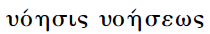

§160
概念是自由的原则，是独立存在着的实体性的力量。概念又是一个全体，这全体中的每一环节都是构成概念的一个整体，而且被设定和概念有不可分离的统一性。所以概念在它的自身同一里是自在自为地规定了的东西。
附释 ：概念的观点一般讲来就是绝对唯心论的观点。哲学是概念性的认识，因为哲学把别的意识当作存在着的并直接地独立自存的事物，却只认为是构成概念的一个理想性的环节。在“知性逻辑”（Verstandeslogik）里，概念常被认作思维的一个单纯的形式，甚或认作一种普通的表象。为情感和心情辩护的立场出发所常常重复说的：“概念是死的、空的、抽象的东西”这一类的话，大概都是指这种低视概念的看法而言。其实正与此相反，概念才是一切生命的原则，因而同时也是完全具体的东西。概念的这种性质是从前此的整个逻辑运动发展而来的，因而这里用不着先予以证明。至于刚才提到的以各概念只是形式的那种想法，是由于固执内容与形式的对立，而这种对立已经和反思所坚持的一些别的对立范畴，全都得到辩证地克服了，亦即通过它们自身矛盾发展的过程得到克服了。换言之，正是概念把前此一切思维范畴都曾加以扬弃并包含在自身之内了。概念无疑地是形式，但必须认为是无限的有创造性的形式，它包含一切充实的内容在自身内，并同时又不为内容所限制或束缚。同样，如果人们所了解的具体是指感觉中的具体事物或一般直接的可感知的东西来说，那末，概念也可以说是抽象的。概念作为概念是不能用手去捉摸的，当我们在进行概念思维时，听觉和视觉必定已经成为过去了。可是如前面所说，概念同时仍然是真正的具体东西。这是因为概念是“存在”与“本质”的统一，而且包含这两个范围中全部丰富的内容在自身之内。
假如我们象早已提过的那样，把逻辑理念的各阶段认作一系列的对于绝对的界说，那么现在所得的界说应该是：绝对就是概念。这样我们当然就必须把概念理解为另一较高的意义，异于知性逻辑所理解那样，把概念仅只看成我们主观思维中的、本身没有内容的一种形式。至此，也许有人还会问，如果“思辨逻辑”给予概念一词以特殊意义，远不同于通常对这一术语所了解的，那么为什么还要把这一完全不同的术语也叫做概念，以致引起误会和混淆呢？对这问题可以这样回答：形式逻辑的概念与思辨的概念的距离虽然很大，但细加考察，即可看出概念较为深刻的意义，并不象初看起来那样太与普通语言的用法相疏远。我们常说，从概念去推演出内容，例如从财产的概念去推演出有关财产法的条文，或者相反，从这些内容去追溯到概念。由此就可看出，概念并不仅是本身没有内容的形式。因为假如概念是一空无内容的形式的话，则一方面从这种空形式里是推不出任何内容来的，另一方面，如果把某种内容归结为概念的空形式，则这内容的规定性将会被剥夺掉，而无法理解了。
§161
概念的进展既不复仅是过渡到他物，也不复仅是映现于他物内，而是一种发展。因为在概念里那些区别开的东西，直接地同时被设定为彼此同一、并与全体同一的东西。而每一区别开的东西的规定性又被设定为整个概念的一个自由的存在。
附释 ：过渡到他物是“存在”范围内的辩证过程，映现在他物内是“本质”范围内的辩证过程。反之，概念的运动就是发展，通过发展，只有潜伏在它本身中的东西才得到发挥和实现。在自然界中，只有有机的生命才相当于概念的阶段。譬如一个植物便是从它的种子发展出来的。种子已包含整个植物在内，不过只是在理想的潜在的方式下。但我们却不可因此便把植物的发展理解为：似乎植物不同的部分，如根干枝叶等好象业已具体而微地、真实地存在于种子中了。这就是所谓“原形先蕴”的假设，其错误在于将最初只是在理想方式内的东西认作业已真实存在。反之，这个假设的正确之处在于这一点即概念在它的发展过程中仍保持其自身，而且就内容来说，通过这一过程，并未增加任何新的东西，但只是产生了一种形式的改变而已。概念的这种在过程中表示其自身为自我发展的本性，也就是一般人心目中所说的先天观念，或者即是柏拉图所提出的，一切学习都是回忆的说法了。但这种说法的意思并不是指经过教育而形成的一切特定意识内容，前此就早已一一具体而微地预先存在于意识内。
概念的运动好象是只可以认作一种游戏：概念的运动所建立的对方，其实并非对方，〔而是在它自己本身内〕。这个道理在基督教教义中是这样表述的：上帝不仅创造了一个世界，作为一种与他相对立的他物，而且又永恒地曾经产生了一个儿子，而上帝，作为精神，在他的儿子里即是在他自己本身里。
§162
关于概念的学说可分为三部分：（一）论主观的或形式的概念。（二）论被认作直接性的概念或客观性。（三）论理念，主体和客体、概念和客观性的统一，绝对真理。
〔说明〕 普通逻辑仅包括有这里所提出的全系统的第三部分的一部分材料，此外还包括有上面所讨论过的思维的定律。在应用的逻辑学里附有一些关于认识论的材料。这里面还参杂有许多心理学的，形而上学的以及各种经验的材料。其所以要参杂这许多经验材料进去，是因为感到那些思维的形式自身最后并不充分足用。但这样一来，逻辑学便失掉它的坚定的方向了。而那些至少是属于真正逻辑范围内的形式，却仅当作被意识着的思维的范畴，而且仅当作知性思维的范畴而非理性思维的范畴。
前面所讨论过的逻辑范畴，即“存在”和“本质”的范畴，诚然不仅是思想的范畴，它们在它们的过渡、辩证环节和返回自身和全体的过程里，却能证明其自身为概念。但它们只是特定的概念（参看§84和§12），自在的概念，或换句话说，是对我们来说的概念。由于每一范畴所过渡的，所映现于其中的对方，只是相对的东西，既未被规定为特殊的东西，而作为两者之合的第三者，也未被规定为个体或主体，也未明白设定每一范畴在它的对方里得到同一，得到它的自由，因为它不是普遍性。——通常一般人所了解的概念只是一些理智规定或只是一些一般的表象，因此，总的说来只是思维的一些有限的规定（参看§62）。
概念的逻辑通常被认作仅是形式的科学，并被理解为研究概念、判断、推论的形式本身的科学，而完全不涉及内容方面是否有某种真的东西；殊不知关于某物是否真的问题完全取决于内容。如果概念的逻辑形式实际上是死的、无作用的和无差别的表象和思想的容器的话，那么关于这些形式的知识就会是与真理无涉的、无聊的骨董。但是事实上，与此相反，它们（逻辑形式）作为概念的形式乃是现实事物的活生生的精神。[99]现实的事物之所以真，只是凭借这些形式，通过这些形式，而且在这些形式之内才是真的。但这些形式本身的真理性，以及它们之间的必然联系，直至现在还没有受到考察和研究。
§163
概念本身包含下面三个环节：一、普遍性，这是指它在它的规定性里和它自身有自由的等同性。二、特殊性、亦即规定性，在特殊性中，普遍性纯粹不变地继续和它自身相等同。三、个体性，这是指普遍与特殊两种规定性返回到自身内。这种自身否定的统一性是自在自为的特定东西，并且同时是自身同一体或普遍的东西。
〔说明〕 个体事物与现实事物是一样的，只不过前者是从概念里产生出来的，因而便被设定为普遍的东西，或自身否定的同一性。现实的事物，因为它最初只是存在和本质之潜在的或直接的统一，故能够发生作用。但概念的个体性是纯全起作用的东西，而且并不复象原因那样带有对另一事物产生作用的假象，而却是对它自己起作用。——但个体性不可以了解为只是直接的个体性，如我们所说个体事物或个人那样。这种意义的个体性要在判断里才出现。概念的每一环节本身即是整个概念（§160），但个体或主体，是被设定为全体的概念。
附释一 ：一说到概念人们心目中总以为只是一抽象的普遍性，于是概念便常被界说为一个普遍的观念。因此人们说颜色的概念，植物动物的概念等等。而概念的形成则被认为是由于排除足以区别各种颜色、植物、动物等等的特殊部分，而坚持其共同之点。这就是知性怎样去了解的概念的方式。人们在情感上觉得这种概念是空疏的，把它们只认为抽象的格式和阴影，可以说是很对的。但概念的普遍性并非单纯是一个与独立自存的特殊事物相对立的共同的东西，而毋宁是不断地在自己特殊化自己，在它的对方里仍明晰不混地保持它自己本身的东西。无论是为了认识或为了实际行为起见，不要把真正的普遍性或共相与仅仅的共同之点混为一谈，实极其重要。从情感的观点出发的人常常对于一般思维，特别对于哲学思维所加的抨击，以及他们所一再断言的思维太遥远、太空疏的危险性，都是由于这种混淆而引起的。
普遍性就其真正的广泛的意义来说就是思想，我们必须说，费了许多千年的时间，思想才进入人的意识。直到基督教时期，思想才获得充分的承认。在别的文化部门方面有了高度造诣的希腊人，对于神和对于人的真正普遍性皆没有充分意识到。希腊人的神灵只是特殊的精神力量，而有普遍性的上帝，一切民族所共仰的上帝，对于雅典人说来，还是一个隐蔽的上帝。同样对于希腊人来说，他们与野蛮人之间也有一个绝对的鸿沟。对于人的本身也还未被他们承认有无限的价值和无限的权利。常有人提出问题，为什么奴隶制度在近代欧洲会消灭？于是他们时而援引某种特殊情况，时而又援引另一种特殊情况来解释这一现象。但基督教的欧洲之所以不复有奴隶的真正根据，不在别的地方，而应从基督教原则本身去寻求。基督教是绝对自由的宗教，只有对于基督徒，人才被当作人，有其无限性和普遍性。奴隶所缺乏的，就是对他的人格的承认，而人格的原则就是普遍性。主子不把奴隶当作人，而只当作一种没有自我的物品。而奴隶也不把他自己看成是“我”，他的“我”就是他的主子。
上面所提到过的单纯的共同点与真正的普遍之间的区别，在卢梭著名的《民约论》中却有恰当的表述。他说，国家的法律必须由公意或普遍的意志（Volonté générale）产生，但公意却无须是全体人民的意志（Volonté de tous）。卢梭对于政治学说将会有更深邃的贡献，如果他心目中能够老是保持着这种区别。公意、普遍意志即是意志的概念，法律就是基于这种普遍意志的概念而产生的特殊规定。
附释二 ：关于知性逻辑所常讨论的概念的来源和形成问题，尚须略说几句，就是我们并不形成概念，并且一般说来，概念决不可认作有什么来源的东西。无疑地，概念并不仅是单纯的存在或直接性。概念也包含有中介性。但这种中介性即在它自身之内，换言之，概念就是它自己通过自己并且自己和自己的中介。我们以为构成我们表象内容的那些对象首先存在，然后我们主观的活动方随之而起，通过前面所提及的抽象手续，并概括各种对象的共同之点而形成概念，——这种想法是颠倒了的。反之，宁可说概念才是真正的在先的。事物之所以是事物，全凭内在于事物并显示它自身于事物内的概念活动。这个思想出现在宗教意识里，我们是这样表达的：上帝从无之中创造了世界。或换句话说，世界和有限的事物是从神圣思想和神圣命令的圆满性里产生出来的。由此必须承认：思想，准确点说，概念，乃是无限的形式，或者说，自由的、创造的活动，它无需通过外在的现存的质料来实现其自身。
§164
概念是完全具体的东西。因为概念同它自身的否定的统一，作为自在自为的特定存在，这就是个体性，构成它〔概念〕的自身联系和普遍性。在这种情形下，概念的各环节是不可分离的。那些反思的范畴总会被认为各个独立有效，可以离开其对方而孤立地理解的；但由于在概念里它们的同一性就确立起来了，因而概念的每一环节只有直接地自它的对方而来并和它的对方一起，才可以得到理解。
〔说明〕 普遍性、特殊性、个体性，抽象地看来，也就相同于同、异和根据。但普遍性乃是自身同一的东西，不过须明白了解为，在普遍性里同时复包含有特殊的和个体的东西在内。再则，特殊的东西即是相异的东西或规定性，不过须了解为，它是自身普遍的并且是作为个体的东西。同样，个体事物也须了解为主体或基础，它包含有种和类于其自身，并且本身就是实体性的存在。这就表明了概念的各环节有其异中之同，有其差别中的确立的不可分离性（§160）。——这也可叫做概念的明晰性，在概念中每一差别，不但不引起脱节或模糊，而且是同样透明的。
我们最常听见的说法，无过于说，概念是某种抽象的东西。这话在一定范围内是对的，一方面是因为概念指一般的思想，而不以经验中具体的感官材料为要素，一方面是因为概念还不是理念。在这种意义下，主观的概念还是形式的。但这也并不是说，概念好象应该接受或具有它自身以外的内容。就概念作为绝对形式而言，它是一切规定性，但概念却是这些规定性的真理。因此，概念虽说是抽象的，但它却是具体的，甚至是完全具体的东西，是主体本身。绝对具体的东西就是精神（参看§159末段）。——就概念作为概念而实存着来说，它自己区别其自身于客观性，客观性虽异于概念，但仍保持其为概念的客观性。一切别的具体事物，无论如何丰富，都没有概念那样内在的自身同一，因而其本身也不如概念那样具体。至于我们通常所了解的具体事物，乃是一堆外在地拼凑在一起的杂多性，更是与概念的具体性不相同，——至于一般人所说的概念，诚然是特定的概念，例如人、房子、动物等等，只是单纯的规定和抽象的观念。这是一些抽象的东西，它们从概念中只采取普遍性一成分，而将特殊性，个体性丢掉，因而并不是从特殊性、个体性发展而来，而是从概念里抽象出来的。
§165
个体性这一环节首先建立起概念中各环节的区别。由于个体性是概念的否定的自身反映，所以个体性最初是概念的自由区分〔或自我分化〕，它就是对概念的第一否定。这样一来，概念的规定性便建立起来了，但这是作为特殊性而建立起来的。这就是说，第一，这些区别开的东西只表示概念各环节彼此间的规定性；第二，各环节间的同一性（即这个就是那个），也同样建立起来了。这种建立起来的概念的特殊性就是判断。
〔说明〕 通常将概念分为清楚的、明晰的和正确的三种的办法，不属于概念的范围，而属于心理学的范围。在心理学里清楚和明晰的概念皆指普通观念或表象而言。一个清楚的概念是指一个抽象的简单的特定的表象。一个明晰的观念除具有简单性外，但尚具有一种标志，或某种规定性可以特别举出来作为主观认识的记号。真正讲来，没有什么东西比标志这一为人们喜爱的范畴，更足以作为表示逻辑的衰败和外在性的标志了。正确的观念比较接近概念，甚至接近理念，但是它仍然不外仅表示一个概念甚或一个表象与其对象（一个外在的事物）之间的形式上的符合。——至于所谓从属的概念与对等的概念的分别，实基于一种对普遍与特殊的无意义的区别，并且也是基于以外在的反思方式去看两者的相互关系。又如列举相反的与矛盾的观念，肯定的与否定的观念等，也不过是对于思想的规定性偶有所见，而对于这些形式本身应属于存在和本质的范围，则是前此业已讨论过的，而且它们与概念的规定性本身实毫不相干。——把概念真正地区别为普遍的、特殊的、个体的三个环节，也可以说，是构成概念的三个样式，但也只有当外在的抽象思想将它们彼此分开后，才可以那样说。对概念加以内在的区别和规定，就是判断。因为下判断，就是规定概念。
§166
判断是概念在它的特殊性中。判断是对概念的各环节予以区别，由区别而予以联系。在判断里，概念的各环节被设定为独立的环节，它们同时和自身同一而不和别的环节同一。
〔说明〕 通常我们一提到判断，就首先想到判断中的两极端，主词与谓词的独立性，以为主词是一实物，或独立的规定，同样以为谓词是一普遍的规定，在那主词之外，好象是在我们脑子里面似的。于是我们便把主词与谓词联接起来而下一判断。由于那联系字“是”字，却说出了谓词属于那主词，因而那外在的主观的联属便又被扬弃了，而判断便被认作对象的自身规定了。——在德文里判断（Urteil）有较深的字源学意义。判断表示概念的统一性是原始的，而概念的区别或特殊性则是对原始的东西予以分割。这的确足以表示判断的真义。
抽象的判断可用这样的命题表示：“个体的即是普遍的”。个体与普遍就代表主词与谓词最初彼此对立的两个规定，由于概念的各环节被认作直接的规定性或初次的抽象。（又如“个体的即是特殊的”和“特殊的即是普遍的”等命题，则属于对判断更进一步的规定。）最值得惊异的缺乏观察力之处，即在许多逻辑书本里并未指出这样一件事实：即在每一判断中都说出了这样的命题：如“个体是普遍”，或者更确切点说：“主词是谓词”（例如，上帝是绝对精神）。无疑地，个体性与普遍性，主词与谓词等规定之间也有区别，但并不因此而影响一件极为普遍的事实：即每一判断都把它们表述成同一的。
那联系字“是”字是从概念的本性里产生出来的，因为概念具有在它的外在化里与它自己同一的本性。个体性和普遍性作为概念的环节，是不可能彼此孤立的两种规定性。前面所讨论到的反思的规定性，在它们的相互关系中也彼此有互相联系，但它们的关系只是“有”的关系，不是“是”的关系，这就是说，不是一种明白建立起来的同一性或普遍性。所以，判断才是概念的真正的特殊性，因为判断是概念的区别或规定性的表述，但这种区别仍然能保持其普遍性。
附释 ：判断常被认为概念的联结，甚或认为是不同种类的概念的联结。就其认概念为构成判断的前提和在判断中以差别的形式出现而言，这种判断论当然是对的。不过如果说概念有种类的不同，那就错了，因为概念，虽说是具体的，但就其为概念而言，本质上仍然是一个概念，而概念所包涵的各个环节也不可认作种类的不同。如果说成是把判断的两边加以联结，也同样是错的。因为一说到联结，就令人误以为那被联结的双方会独立存在于联结之外。这种对于判断的性质的外在的看法，当人们说判断的产生是由于把一个谓词加给主词时，就更明确了。照这种看法，主词便是外在的独立自存之物，而谓词就被认为只是从我们脑子内找出来的东西。但是主词与谓词关系的这种看法，却与联系词“是”字相矛盾。当我们说，“这朵玫瑰花是红的”或者说“这幅画是美的”时，我们这里所表达的，并不是说我们从外面去把红加给这朵玫瑰花，把美加给这幅画，而只是说红美等是这些对象自身特有的诸规定。形式逻辑对于判断的通常看法还有一个缺点，按照这种逻辑，判断一般好象仅只是一个偶然的东西，而从概念到判断的进展过程也没有得到证明。但须知，概念本身并不象知性所假想的那样自身固执不动，没有发展过程，它毋宁是无限的形式，绝对健动，好象是一切生命的源泉（Punctum saliens），因而自己分化其自身。这种由于概念的自身活动而引起的分化作用，把自己区别为它的各环节，这就是判断。因此判断的意义，就必须理解为概念的特殊化。无疑的，概念已经是潜在的特殊性。但是在概念本身内，特殊性还没有显著地发挥出来，而是仍然与普遍性有着明显的统一。例如前面所说（§161附释），植物的种子诚然业已包含有根、枝、叶等等特殊部分，但这些特殊的成分最初只是潜在的，直至种子展开其自身时，才得到实现。这种自身的开展也可以看成是植物的判断。这个例子还可用来表明，何以无论概念也好，判断也好，均不单纯是在我们脑子里找出来的，也不单纯是由我们造成的。概念乃是内蕴于事物本身之中的东西；事物之所以是事物，即由于其中包含概念，因此把握一个对象，即是意识着这对象的概念。当我们进行判断或评判一个对象时，那并不是根据我们的主观活动去加给对象以这个谓词或那个谓词。而是我们在观察由对象的概念自身所发挥出来的规定性。
§167
判断通常被认为是一种主观意义的意识活动和形式，这种活动和形式仅单纯出现于自我意识的思维之内。但在逻辑原理里，却并没有作出过这种区别。因为按照逻辑原则，判断是被认为极其普遍的：“一切事物都是一个判断”，这就是说，一切事物都是个体的，而个体事物又是具有普遍性或内在本性于其自身的；或者说是，个体化的普遍性。在这种个体化的普遍性中，普遍性与个体性是区别开了的，但同时又是同一的。
〔说明〕 按照对于判断的单纯的主观解释，好象是由我附加一个谓词给一个主词，但这却正好与判断的客观表述相矛盾：在“玫瑰是红的”，“黄金是金属”等判断里，并不是我首先从外面附加给它们某种东西。——判断与命题是有区别的；命题对主词有所规定，而这个规定与主词并无普遍关系，只不过表述一个特殊状态，一种个别行动等等类似的东西。譬如，凯撒某年生于罗马，在高卢地区进行了十年战争，渡过了鲁比康河等等只能算是命题，而非判断。又如说，“我昨晚睡得很好”，或说，“举枪！”等话，均可转变成判断的形式，也未免空无意义。只有这样一个命题如“一辆马车走过去了”，也许可以算作一判断，但至多也只是一个主观的判断，如果我们怀疑那走过去的东西是否马车，或者我们怀疑究竟是对象在动呢，还是观察者在动。总之，只有当我们的目的是在对一个尚没有适当规定的表象加以规定时，才可说是在下判断。
§168
判断所表示的观点是有限的观点。从判断的观点看来，事物都是有限的，因为事物是一个判断，因为它们的特定存在和它们的普遍本性（它们的肉体和它们的灵魂）虽是联合在一起的，（否则事物将为无物），但它们的这些环节仍然是不同的，而且一般说来又是可以分离的。
§169
在“个体是共体”这一抽象的判断里，主词是否定地自身联系的东西，是直接具体的东西，反之，谓词则是抽象的、无规定性的、普遍的东西。但这两个成分却被一个“是”字联在一起，所以那具有普遍性的谓词也必然包含有主词的规定性，因而是特殊性。而特殊性就是主词与谓词确立了的同一性。特殊性就其中立于主词、谓词形式上的差别而言，就是内容。
〔说明〕 主词必先通过谓词的规定才具有其明确的规定性和内容，因而孤立的主词本身只是单纯的表象或空洞的名词。在类似“上帝是最真实者”或“绝对是自身同一者”等判断里，上帝和绝对只是单纯的名词；主词的内容只有借谓词表述出来。主词作为一具体的事物在别的方面的内容如何，这一判断毫未涉及（参看§31）。
附释 ：如果我们说：主词就是对它有所说的某物，谓词就是说出来的东西，那么这个说法未免失之琐屑。因为这种说法对于两者的差别毫未切实道及。按照它的思想来说，主词是个体，谓词是共体。在判断的更进一步的发展过程中，主词便不单纯是直接的个体，而谓词也不单纯是抽象的共体。于是主词便获得特殊性和普遍性的意义。谓词也获得特殊性和个体性的意义。所以判断的两方面虽有了主词与谓词两个名称，但在发展的过程中，它们的意义却有了变换。
§170
现在更进一步讨论主词与谓词的特性。主词，作为否定的自我关系（参看§163及§166的说明），是谓词的稳固基础。谓词持存于主词里，并理想地包含在主词里。也可以说，谓词内蕴在主词里。再则由于主词一般直接地是具体的，故谓词的某种特殊内容仅表示主词的许多规定性之一，于是主词便较谓词更为丰富，更为广大。
反之，谓词作为共体，它是独立自存的，而且与主词的存在与否不相干。谓词超出主词，使主词从属在它的下面，因此，就它的这一方面来说，谓词又较主词更为广大。只有谓词的特定内容（§169）才构成两者的同一。
§171
主词、谓词和特定内容或主客的同一之间的关系所形成的判断里，最初仍然是被设定为相异的，或彼此相外的。但就本质上说，亦即按照概念的观点来看，它们是同一的。由于主词是一具体的全体，这就是说，主词不是任何某种不确定的杂多性，而只是个体性，即特殊性与普遍性在同一性中。——同样，谓词也是这样的统一性（§170）。再则设定主词与谓词的同一性的联系字，最初也只是用一个抽象的“是”字去表述。依这种同一性看来，主词也须设定具有谓词的特性，从而谓词也获得了主词的特性，而联系字“是”也就充分发挥其效能了。这就是判断通过内容充实的联系字而进展到推论的过程。判断的进展最初只是对那抽象的感性的普遍性加以全、类、种等等规定，更进而发展到概念式的普遍性。
〔说明〕 有了对判断进一步加以规定的知识，我们便可于通常所列举的判断的种类里，发现一种意义和联系。我们更可看出，通常对于判断的种类的列举不但十分偶然，显得肤浅，而且所提出的一些区别也有些杂乱无章。譬如，肯定判断，直言判断，和确然判断的区别，可以说是一方面出于捕风捉影，一方面仍然没有确定的区别。真正讲来，不同的判断须看成是一个跟随一个必然进展而来，并看成是对概念自身的一种连续规定。因为判断不是别的，即是特定的或规定了的概念。
从前面的存在和本质两个范围看来，特定的概念作为判断，也可以说是这两个范围的重演，不过是就概念的简单关系加以发挥罢了。
附释 ：不同种类的判断并不单纯是经验的杂多体，而必须把它们理解为通过思维所规定的全体。康德的一个伟大功绩就在于首先指出了这种要求的必然性。虽说康德根据他的范畴表的架格，提出了一种对于判断的分类，把判断分为质的判断，量的判断，关系的判断和样式的判断，但这个分类不能令人满意，一方面由于他仅是形式地运用这些范畴架格，一方面也是由于这些范畴的内容〔是空疏的〕。但他这种划分确系基于真实的直观，确实认识到我们借以规定各种不同的判断的原则，即逻辑理念的普遍形式本身。依这种看法，我们便可获得，三种主要的判断恰好相当于“存在”，“本质”和“概念”三个阶段。其中第二种主要判断恰好相当于本质的性格，亦即相当于差别的阶段，使得这一阶段自身又得到了重新表述。这种判断的分类系统的内在根据要在下面的原则去寻求：即概念既然是“存在”与“本质”的理想的统一，则概念在判断中的发展，也必须首先在符合概念变化发展的方式下重现这两个阶段的范畴。同时概念本身随之就会表明为规定着真正判断的原则。
各种不同的判断不能看作罗列在同一水平，具有同等价值，毋宁须把它们认作是构成一种阶段性的次序，而各种判断的区别则是建筑在谓词的逻辑意义上的。至于判断具有价值的区别，甚至在通常意识里也一直可以找到。譬如，对于一个常常喜欢提出“这墙是绿色的”，“这火炉是热的”一类判断的人，我们决不迟疑地说他的判断力异常薄弱。反之，一个人所下的判断多涉及某一艺术品是否美，某一行为是否善等等问题，则我们就会说他真正地知道如何去下判断。对于刚才所提到的第一种判断，其内容只形成一种抽象的质，要决定它是否有这质，只须有直接的知觉即可足用。反之，要说出一件艺术品是否美，一个行为是否善，就须把所说的对象和它们应该是什么样的情况相比较，换言之，即须和它们的概念相比较。
§172
直接判断是关于定在[100]的判断。直接判断的主词被设定在一种普遍性里，把普遍性作为它的谓词，这个谓词是一种直接的质，因而亦即感性的质。质的判断可以是（一）一肯定的判断：个体是特殊。但个体并不是特殊，或确切点说，这种个别的质并不符合主词的具体的本性。这样的判断就是（二）否定的判断。
〔说明〕 认为这玫瑰花是红的，或不是红的，这类质的判断包含有真理，乃是一个最主要的逻辑偏见。至多可以说：这类判断是不错（richtig）的。这就是说，在知觉、在有限的表象和思维的限定的范围内，这些话是不错的。其错或不错，须取决于其内容，而这内容也同样是有限的，单就其自身来说，也是不真的。但真理完全取决于它的形式，亦即取决于它所确立的概念和与概念相符合的实在。但这样的真理在质的判断里是找不到的。
附释 ：在日常生活里，“真理”与“不错”常常当作同义的名词。因此当我们的意思本想说某句话不错时，我们便常说那句话是真理。一般讲来，“不错”仅是指我们的表象与它的内容有了形式上的符合，而不问这内容的其他情形。反之，真理基于对象与它自己本身相符合，亦即与它的概念相符合。譬如说，某人病了，或某人偷窃东西，这些话尽可以说是不错的，但这样的内容却不是真的。因为一个有病的身体与身体的概念是不一致的。同样，偷窃行为与人的行为的概念也是不相符的。从这些例子可以看出，一个直接的判断，关于某一个别事物的某种抽象的质有所表述，无论这质的判断如何不错，却不能包含真理，因为这种判断里的主词与谓词彼此的关系，不是实在与概念的关系。
我们还可以说，直接判断之所以不真，即由于它的形式与内容彼此不相符合。当我们说，“这玫瑰花是红的”时，由于有联系字“是”作为媒介，就包含主词与谓词彼此符合一致。但玫瑰花是一个具体的东西，它不单纯是红的，而又有香气，还有特定的形状和其他别的特性，都没有包含在谓词“红”之内。另外，谓词作为一个抽象的共体，也不仅单独适合于这一主词。再则还有许多别的花和一般别的东西，也同样是红的。所以在直接判断里，主词与谓词似乎彼此间只在一点上接触，它们彼此并不相吻合。概念的判断情形便与此不同。当我们说这个行为是善的时，我们便作出一个概念的判断。我们立即可以看出，在这里主词与谓词间的关系便不是松懈外在，象直接判断那样。因为在直接判断里，谓词乃是一种抽象的质，这质可以隶属于主词，亦可以不隶属于主词。反之，在概念的判断里，谓词好象是主词的灵魂，主词，作为这灵魂的肉体，是彻头彻尾地为灵魂（谓词）所决定的。
§173
在这种质的否定，即作为初次的否定中，主词与谓词的联系是仍然保持着的。谓词因此便是一种相对的普遍性，只是它的某一特质被否定了。（说玫瑰花不是红的，即包含它还是有颜色的，不过是具有另一种颜色罢了。但这只表明它又是一种肯定的判断。）但个别的事物也不是一种普遍性的东西。因此（三）判断自身便分裂为两个形式：（α）为一种空洞的同一关系，说：个体就是个体，——这就是同一的判断；或（β）为一种主词与谓词完全不相干的判断，这就是所谓无限的判断。
〔说明〕 无限判断的例子，有如“精神不是象”，“狮子不是桌子”等等。类似这种命题是不错的，但正和同一性的命题一样毫无意义，如说：“一个狮子是一个狮子”，“精神是精神”。这些命题虽然是直接的或所谓质的判断的真理性，但一般讲来，它们并不是判断，仅会出现在坚持任何一个不真的抽象观念的主观思维里。——客观地看来，这些判断表达了存在着的东西或感性事物的性质，如刚才所说它们陷于分裂，一方面成为空的同一性，另一方面成为充满一切的关系，但这种关系是相关的双方之质的异在，彼此完全不相干。
附释 ：主词与谓词毫无任何联系的这种否定的无限判断，在普通形式逻辑里常被引用单纯当作毫无意义的玩艺儿。但事实上，这种无限的判断却不仅是主观思维的一个偶然形式，而且它还引出前面的直接判断（肯定的和简单否定的直接判断）之最近的辩证发展的结果，在其中直接判断的有限性和不真性就明白地显露出来了。犯罪一事可以认作否定的无限判断的一个客观的例子。一个人犯了罪，如偷窃，他不仅如象在民事权利争执里那样，否定了别人对于特定财物的特殊权利，而且还否认了那人的一般权利。因此他不仅被勒令退还那人原有的财物，而且还须受到惩罚。这是因为他侵犯了法律本身的尊严，侵犯了一般的法律。反之，民事诉讼里对于法权的争执，只是简单的否定判断的一个例子。因为那犯法的一方只是否定了某一特殊法律条文，但他仍然承认一般的法律。简单否定判断的意义与这种情形颇为相似：这花不是红的，——这里所否定于花的只是它的这一种特殊的颜色，而不是否定花的一般的颜色。因为这花尚可能是蓝的、黄的或别种颜色的。同样，死亡也是一种否定的无限判断，它是与作为单纯的否定判断看待的疾病有所区别的。在疾病里，只是人的生命中此种或彼种功能受妨碍了或被否定了。反之，在死亡里，如我们所常说那样，肉体和灵魂分离了，这就是说，主词与谓词完全隔绝了。
§174
个体在判断中被设定作为（返回到自己）的个体，就有一个谓词，而与这谓词相对的主词，作为自己与自己相联系的东西，同时仍然是谓词的对方。——在实存里，这主词不复是一个直接的质的东西，而是与一个他物〔对方〕或外部世界有着相互关系和联系。这样一来，谓词的普遍性便获得这种相对性的意义。（例如，有用的或危险的；重量或酸性；又如本能等等，均可当作相对性谓词的例子。）
附释 ：反思判断不同于质的判断之处，一般在于反思判断的谓词不复是一种直接的抽象的质，而是这样的，即主词通过谓词而表明其自身与别一事物相联系。譬如，我们说，这玫瑰花是红的，我们是仅就主词直接的个体性来看，而没有注意到它与别的东西的联系。反之，如果我们下这样的判断：“这一植物是可疗疾的”，则通过谓词，可疗疾的性能，便与别一事物（利用此植物去治疗疾病）联系起来了。同样，象“这一物体是有伸缩性的”，“这工具是有用的”，“这种刑罚有恐吓人的作用”等判断，也都是反思的判断。因为这些判断里的谓词，一般都是些反思的规定。通过这样的反思规定，谓词诚然超出了主词的直接的个体性，但对于主词的概念却仍然还没有提示出来。通常抽象理智式的思维最喜欢运用这种方式的判断。所考察的对象愈是具体，则这种对象就愈可以提供更多的观点给反思思维。但是通过反思的思维决不能穷尽对象的固有本性或概念。
§175
第一，主词，作为个体的个体（在单一判断里），是一个共体。第二，在这种关系里，主词便超出了它的单一性。主词的这种扩大乃是一种外在的主观反思，最初只是一不确定的特殊性。（在直接的判断即否定又肯定的特殊判断里；个体自身区分为二，一方面它自己与自己相联系，一方面它与他物相联系。）第三，有一些东西是普遍性，于是特殊性便扩大为普遍性；或者普遍性被主词的个体性所规定而成为全体性（共同性，通常的反思的普遍性）。
附释 ：当主词在单一判断里被认作有普遍性时，从而主词便超出其仅为一单纯的个体性的地位。当我们说，“这植物是可疗疾的”时，意思并不只是指仅仅这一单独的植物是可疗疾的，而且指一些或几个这样的植物都有这种效能。于是我们便进而得到特殊判断（有一些植物是可疗疾的，有一些人是有发明能力的等等）。那直接的个体性通过特殊性便失掉其独立性，进而与别的事物联系在一起。人作为这一个人来说，便不复仅是这一个别的人，而是与别的人站在一起，因而成为众人中的一分子。正由于这样，他便又属于他的普遍性，因而他就提高了。——特殊判断既是肯定的，又是否定的。如果只是一些物体是有伸缩性的，那末很明显，别的许多物体便是没有伸缩性的。
这样，于是又进展到第三种形式的反思判断，这就是全称判断（凡人皆有死；凡金属皆传电）。全体性是反思式的思想首先习于想到的一种普遍性。以个体事物作为反思的基础，我们主观的思维活动，便把那些事物综括起来，而称之为“全体”。在这里普遍性只表现为一种外在的联结，这种联结作用把独立自存的和互不相干的个体事物总括起来。然而真正讲来，普遍性才是个体事物的根据和基础，根本和实体。譬如，我们试就卡尤斯、提图斯、森普罗尼乌斯以及一个城市或地区里别的居民来看，那么他们全体都是人，并不仅是因为他们有某些共同的东西，而且是因为他们同属一类（Gattung）或具有共性。要是这些个体的人没有类或共性，则他们就会全都失掉其存在了。反之，那种只是表面地所谓普遍性，便与这里所讲的类或共性大不相同；事实上这种表面的普遍性只是所有的个体事物被归属在一起和它们的共同之点。有人曾说过，人之所以异于禽兽，由于人共同具有耳垂。然而如果这人或那人没有耳垂，很明显这决不会影响他别方面的存在，他的性格和才能等等。反之，如果假定卡尤斯根本不是人，却说他有勇气、有学问等等，那便是荒谬之至了。个体的人之所以特别是一个人，是因为先于一切事物，他本身是一个人，一个具有人的普遍性的人。这种普遍性并不只是某种在人的别的抽象的质之外或之旁的东西，也不只是单纯的反思特性，而毋宁是贯穿于一切特殊性之内，并包括一切特殊性于其中的东西。
§176
由于主词也同样被规定为普遍的东西，因此主词与谓词的同一性便建立起来了，从而判断形式的划分也就显得无关重要了。主词与谓词间的这种内容的统一（内容即是与主词的否定的自身回复相同一的普遍性），使得判断的联系成为一种必然的联系。
附释 ：从反思的全称判断进展到必然判断，也曾在我们的通常意识里可以看见：譬如，当我们说，凡属于全体的即属于类，因而即是必然的。当我们说：所有的植物，所有的人等等与说人，植物等等，完全是一样的。
§177
必然的判断，作为在内容的差别中有同一性的判断，有三种形式：（一）在谓词里一方面包含有主词的实质或本性，具体共相（共体）或类（die Gattung）；一方面由于共体里也包含有否定的规定性在自身内，因而这谓词便表示排他性的本质的规定性，即种（die Art）。这就是直言判断。
（二）按照主词和谓词的实质性，它们双方都取得独立现实性的形态，而它们的同一性则只是内在的。因此一方的现实性同时并不是它自身的现实性，而是它的对方的存在。这就是假言判断。
（三）在概念的这种外在化的过程里，它的内在的同一性同时也建立起来了。所以共性就是“类”，“类”在它排斥他物的个体性里，是自身同一的。这种判断，它的主词和谓词双方都是共性，这共性有时确是共性，有时又是它排斥自身的特殊化过程的圆圈。在这个圆圈里，“不是这样就是那样”，以及“既是这样又是那样”，它都代表类，这样的判断就是选言判断。普遍性最初是作为类，继而又作为它的两个种在绕圈子。这样的普遍性便被规定并设定为全体性。
附释 ：直言判断（如“黄金是金属”，“玫瑰花是一植物”）是直接的必然判断，约相当于本质范围内的实体和偶性的关系。一切事物都是一直言判断，亦即一切事物皆有构成其坚定不变的基础或实体本性。只有当我们从类的观点去观察事物，并认事物必然地为类所决定时所下的判断，才算是真正的判断。如果有人把类似“黄金是昂贵的”，“黄金是金属”这两种判断，认为是平列于同一阶段，那就表明他缺乏逻辑训练。“黄金是昂贵的”，只涉及黄金与我们的嗜好和需要的外在关系，并涉及要获得黄金的费用以及其他情形。黄金仍能保持其为黄金，即使那种的关系改变了或取消了。反之，金属性却构成黄金的实体本性，没有了金属性，则黄金以及一切属于黄金的特质，或一切可以描写黄金的词句，将无法自存。同样，当我们说，“卡尤斯是一个人”时，情形也是如此。我们所要表述的意思即在于：不管他一切别的情形怎样，只要它们符合他作为一个人的实体本性，它们才有意义和价值。
但直言判断甚至在一定限度内还是有缺点的，在直言判断里特殊性那一方面便没有得到应有的地位。譬如，黄金固然是金属，但银、铜、铁等等也同样是金属。而金属性作为金属的类，对于它所包含的种方面的特殊的东西是漫无差别的。为了克服这种缺点，这就使得直言判断进展到假言判断。假言判断可以用这样的公式表达：如果有甲，则有乙。这种由直言判断进展到假言判断的过程与前面本质范围内所讨论的由实体与偶性的关系进展到因果关系的过程，其矛盾进展的情形是相同的。在假言判断里，内容的规定性表现为中介了的，依赖于对方的。这恰好就是因与果的关系。一般讲来，假言判断的意义，即在于通过假言判断，普遍性在它的特殊化过程中就确立起来了。这样便过渡到必然判断的第三种形式，即选言判断。甲不是乙必是丙或丁；诗的作品不是史诗必是抒情诗或剧诗；颜色不是黄的必是蓝的或红的等等。选言判断的两方面是同一的。类是种的全体，种的全体就是类。这种普遍与特殊的统一就是概念。所以概念现在就构成了判断的内容。
§178
概念的判断以概念、以在简单形式下的全体，作为它的内容，亦即以普遍事物和它的全部规定性作为内容。概念判断里的主词，（一）最初是一个体事物，而以特殊定在返回到它的普遍性为谓词。换言之，即以普遍性与特殊性是否一致为谓词，如善、真、正当等等。这就是确然判断。
〔说明〕 象这样的判断，说一个事物或行为是好或坏、真、美等等，甚至在普通生活里我们也称为判断。我们决不会说一个人有判断力，如果他只知道作肯定的或否定的判断如：这玫瑰花是红的，这幅画是红的、绿的、陈旧的等等。
确然判断，虽说一般社会不承认它自称为有何独立的可靠性，但是由于近来主张直接知识和直接信仰的原则的流行。甚至在哲学里也被发挥成为独特的重要形式的学说了。我们可以在主张这种原则的许多所谓哲学著作里，读到千百次关于理性、知识、思想等等的论断或确信，因为外在的权威此时反正已没有多大效力了，于是这些论断便想通过对于同一原则之无穷地一再申述，以求赢得对它们的信仰。
§179
确然判断在它最初的直接主词里，还没有包含谓词所须表达的特殊与普遍的联系。因此确然判断只是一主观的特殊性，因而为一个具有同样理由，或者毋宁说同样没有理由的另一相反的论断所反对。因此它就立即只是（二）一种或然判断。但是当客观的特殊性被确立在主词之内，主词的特殊性成为它的定在本身的性质时，这样（三）主词便表达了客观的特殊性与它的本身性质、亦即与它的“类”之间的联系，因而亦即表达出构成谓词的内容的概念了（参看§178）。如：这一所（直接的个体性）房子（类或普遍性），具有一些什么样的性质（特殊性），是好的或坏的。这就是必然判断。——一切事物皆是一类（亦即皆有其意义与目的），皆是在一个具有特殊性质的个别现实性中的类。至于它们之所以是有限的，是因为它们的特殊性可以符合共性，或者也可以不符合共性。
§180
这样，主词与谓词自身每一个都是整个判断。主词的直接性质最初表明其自身为现实事物的个别性与其普遍性之间的中介的根据，亦即判断的根据。事实上这里所建立起来的，乃是主词与谓词的统一，亦即概念本身。概念即是空虚的联系字“是”字的充实化。当概念同时被区分为主词与谓词两个方面，则它就被建立为二者的统一，并使二者的联系得到中介，——这就是推论。
§181
推论是概念和判断的统一。推论是判断的形式差别已经返回到简单同一性的概念。推论是判断，因为同时它在实在性中，亦即在它的诸规定的差别中，被设定起来了。推论是合理的，而且一切事物都是合理的。
〔说明〕 人们通常习于把推论〔即三段论式〕认作理性思维的形式，但是只认作一种主观的形式，在推论形式与别的理性的内容，例如理性的原则，理性的行为、理念等等之间，不能指出任何一种联系。我们一般时常和多次听见人说起理性，并诉诸理性，却少有人说明理性是什么，理性的规定性是什么，尤其少有人想到理性和推论的联系。事实上，形式的推论是用那样不合理的方式去表述理性，竟使得推论与理性的内容毫不相干。但是既然这样的理性内容只有通过思维所赖以成为理性的那个规定性，才能够成为理性的，所以这种内容之所以能够成为理性的，只有通过那种推论〔或三段论式〕的形式才行。但推论不是别的，而是（如上节所述那样）概念的实现或明白发挥（最初仅在形式上）。因此推论乃是一切真理之本质的根据。在现阶段对于绝对的界说应是：绝对即是推论，或者用命题的方式来表述这原则说：一切事物都是一推论。一切事物都是一概念。概念的特定存在，即是它的各环节的分化，所以概念的普遍本性，通过特殊性而给予自身以外在实在性，并且因此，概念，作为否定的自身回复，使自身成为个体。——或反过来说，现实事物乃是个体事物，个体事物通过特殊性提高其自身为普遍性，并且使自身与自身同一。——现实事物是一，但同时又是它的概念的各环节之多，而推论便表示它的各环节的中介过程的圆圈式行程，通过这一过程，现实事物的概念得以实现其统一。
附释 ：推论正如概念和判断一样，也常常单纯被认作我们主观思维的一个形式。因此推论常被称为证明判断的过程。无疑地，判断诚然会向着推论进展。但由判断进展到推论的步骤，并不单纯通过我们的主观活动而出现，而是由于那判断自身要确立其自身为推论，并且要在推论里返回到概念的统一。细究之，必然判断构成由判断到推论的过渡。在必然判断里，我们有一个体事物，通过它的特殊性，使它与它的普遍性即概念联系起来。在这里，特殊性表现为个体性与普遍性之间起中介作用的中项。这就是推论的基本形式。这种推论的进一步发展，就形式看来，即在于个体性和普遍性也可以取得这种中介的地位，这样一来，便形成了由主观性到客观性的过渡。
§182
在直接推论里，概念的各规定作为抽象的东西彼此仅处于外在关系之中。于是那两个极端，个体性和普遍性，和作为包含这两者的中项的概念，均同样只是抽象的特殊性。这样一来，这两个极端彼此之间，以及其对它们的中项的概念之间的关系都同样被设定为漠不相干地独立自存着。这种推论即是形式的理智推论，这种推论虽可说是理性的，但没有概念。在这种推论里，主词与一个别的规定性相联系，或者说，普遍性通过这个中介过程包括一个外在于它的主词。反之，在理性的推论里，主词通过中介过程，使自己与自己相结合。这样，它才成为〔真正的〕主体，或者说，主体本身才成为理性推论。
〔说明〕 在下面的考察里，对于理智的推论，按照通常的意义，予以主观方式的表述。即按照我们作抽象的理智的推论时所采取的那种主观方式去表述。事实上，这只是一种主观的推论。但这种推论也有其客观的意义：它仅足以表达事物的有限性，不过是根据思维形式在这里所达到的特定方式去表达出来罢了。在有限事物里，它们的主观性，作为单纯的事物性（Dingheit），与它们的特质、它们的特殊性是可以分离的，同样，它们的主观性与它们的普遍性也是可以分离的，只要当这种普遍性既是事物单纯的质，和此一事物与别的事物的外在联合，而且又是事物的类和概念时，也是可以分离的。
附释 ：依据上面所提及的认推论为理性的形式的看法，于是有人便将理性本身界说为进行推论的能力，同时又将知性界说为形成概念的能力。除了这种说法是基于一种肤浅的精神观念，即把精神仅仅当作是许多彼此并立的力量或能力的总合以外，对于这种将知性与概念排列在一起，将理性与推论排列在一起的办法，我们还必须注意到：正如概念决不可仅只看作知性的规定，同样推论也决不可毫无保留地认为是理性的。因为，一方面形式逻辑在推论的学说里所常讨论的，事实上除了单纯是一种理智的推论外，并不是别的东西。这种推论实在够不上享受“理性形式的美名”，更够不上享受“代表一切理性”的尊荣；另一方面真正的概念亦不单纯是知性的形式。甚且还可以说，概念之所以被贬抑为知性的形式，乃是抽象的理智在起作用。因此又有人常习于将单纯的知性概念与理性概念区别开，但这却不可了解为有两种不同的概念，而毋宁必须认识到这只是表示※我们的〔认识〕活动或者仅停留在概念的否定的和抽象的形式里，或者按照概念的真实本性把概念理解为同时既是肯定的又是具体的东西。例如，如果我们把自由看成必然性的抽象的对立面，那么，这就是单纯的自由的概念。反之，真正的理性的自由概念便包含着被扬弃了的必然性在自身内[101]。同样，所谓自然神论提出的对于上帝的界说，也仅仅是上帝的知性概念，反之，那认上帝为三位一体的基督教便包含了上帝的理性概念。
§183
第一种推论，如前节所指出，就是定在的推论或质的推论。其形式（一）为E—B—A。〔E代表个体性（Einzelnheit），B代表特殊性（Be-sonderheit），A代表普遍性（Allgemeinheit）〕。这就是说，作为一个个体的主词通过一种质〔特殊〕与一种普遍的规定性相结合。
〔说明〕 不用说，主词（小项）除个体性外尚有别的特性，同样，另一极端（结论里的谓词或大项）除了单纯的普遍性外，也还有别的特性，这里都不加考察，只着重论述它们所借以作出推论的那些形式。
附释 ：定在的推论是单纯的理智推论，至少就在定在推论中，个体性、特殊性及普遍性各自处于抽象对立的情况来说，它确是一种抽象的理智推论。所以这种推论可以说是概念的高度的外在化。这里我们有一个直接的个体事物作为主词；于是从这主词里挑出任何一特殊方面，一种特质，并且通过这种个别特质就来证明这一个体事物是一个普遍的东西。譬如，当我们说：这玫瑰花是红的；红是一种颜色，故这玫瑰花是有颜色的。通常逻辑著作所讨论的大都是这类形式的推论。从前大家认这种推论为一切知识的绝对规则，并认为一切科学的论断，只有经过这种推论加以证明，才算是可靠的。相反地，现今三段论法的各种形式，除了在逻辑教科书外已不易遇见，而且对于这种推论形式的知识已被认作空疏的学院智慧，对于实践的生活以及科学的研究都没有更多用处。对此，我们首先要指出，如果我们每一认识场合，都要炫耀这一全套形式的推论，实属多余，且有学究气。但推论的各种形式却又同时在我们的认识活动中不断地在起作用。譬如，当一个人于冬天清晨听见街上有马车碾轧声，因而使他推想到昨夜的冰冻可能很厉害。这里他也可算是完成了一种推论的活动。这种活动我们在日常多方面的复杂生活中不知要重复多少次。一个作为有思想的人，在他的日常行为里，力求明白意识到这类推论形式当属不无兴趣，犹如我们研究我们有机生活中的各种机能，如消化、营养、呼吸等机能，甚或研究那围绕着我们的自然界的事变和结构，也公认为极有兴趣一样。但我们无疑地也须承认，我们无需先研究解剖学和生理学，然后才能适当的消化和呼吸；同样，我们也并无须先研究逻辑，然后才可作出正确的推论。
亚里士多德是观察并描述三段论法的各种形式（所谓推论的诸式）的主观意义的第一人。他作得那样严密和正确，以致从来没有人在本质上对他的研究成果有任何进一步的增加。我们对亚里士多德的这项成就虽然给予很高评价，但是不要忘记了他在他自己的哲学研究里所应用的思维方式，却并不是理智推论的诸形式，也不是一般有限思维的形式（参看§189说明[102]）。
§184
第一，这种推论中的各项是完全偶然的。因为那作为抽象特殊性的中项只是主词的任何一种特性。但这直接性的主词，亦即具有经验的具体性的主词，尚有许多别的特性。因此它同样可以与许多别的普遍性相联系。同样，个别的特殊性也可具有许多不同的特性，所以主词可以透过这同一中项以与别的一些不同的普遍性相联系。
〔说明〕 形式的推论之所以失其效用，由于流行的风气使然者多，由于洞见其错误者少，而且还由于人们无意于用论证方式去辨明形式的推论所以无用的缘故。此节及下节即在于指明这类的推论对于求真理是空疏无用的。
依上文所说，即可看出，利用这类的推论可以“证明”（象一般人所叫做的“证明”）许多极不相同的结论。只须随便拾取一个中项，即可根据它过渡到〔或推论出〕所欲达到的结论。但假如从另一中项出发，也可根据它来“证明”另一个东西，甚至与前此相反的某种东西。一个对象愈是具体，它所具有的方面就愈多，亦即属于它的、足以用来作为中项的东西就愈多。要在这些方面之中去决定哪一方面较另一方面更为主要，又须建立在这样一种推论上：而这种推论坚持着某一个别的特性，而且同样也很容易为这同一个特性寻出某一方面或某一理由，据此去证明它确可以算是必然的和重要的。
附释 ：虽说我们很少在日常的生活交往里时常想到理智的推论，但它仍不断地在实际生活中发生作用。譬如，在民事诉讼里，辩护律师的职务就在于强调那对当事人有利的法律条文使之有效。从逻辑观点看来，这种法律条文不过是一个中项罢了。在外交交涉中情形亦复相同，譬如，当各个强国都要求占有同一块土地时，在这种争执中，继承权，土地的地理位置，居民的祖籍和语言，或任何别种理由，均可提出加以强调，作为中项。
§185
第二，不仅如前节所说这种推论中的各项是偶然的，而且由于它在各项的联系中的形式，这种形式推论也同样是偶然的。按照推论的概念看来，真理在于通过中项来联系两个不同的事物，这中项就是两者的统一。但用中项来联系两极端（所谓大前提和小前提），在推论里毋宁是一种直接的联系。换言之，它们中间并没有可以作为联系的真正的中项。
〔说明〕 推论的这种矛盾又通过一种〔新的〕无限进展表现为这样一种要求：即两个前提中的每一前提，都同样地要求一新的推论加以证明，然而，由于后一推论又同样具有两个直接的前提，于是又重新需要两个推论予以证明。所以，这直接的前提又重复其自身，而且永远有要求双重推论的需要，直至无穷。
§186
这里为了表明经验的重要性所指出的（一般人以为绝对不错的形式）推论的缺点，在对推论的进一步规定中必定会自己扬弃其自身。因为我们现在已进入概念的范围，正如在判断里那样，相反的特性不单纯是潜在的，而且是明白建立起来时，所以要分析出推论逐渐进展的过程，我们只须接受或承认推论在它的每一阶段里通过自身建立其本身的过程。
通过直接推论，（一）E—B—A，个体性，（通过特殊性）与普遍性相结合，并且建立一个有普遍性的结论。所以那个个体的主词，本身就是一普遍性，因而便成为两极端的统一或中介者。这样便过渡到第二式的推论，（二）A—E—B。这第二式的推论便表达出第一式的真理：即中介过程只是在个体性里面发生，因此便是偶然的。
§187
第二式将普遍性和特殊性结合起来。这普遍性是在前一式的结论里，通过个体性的规定，而过渡到第二式，于是就取得直接主词的地位。因此这普遍性便通过这一结论而被建立为特殊性，因而成为两极端的中介，而这两极端的地位现在则为别的两项（特殊性与个体性）所占据。这就是推论的第三式：（三）特殊——普遍——个体（B—A—E）。
〔说明〕 所谓推论的诸式（亚里士多德很正确地只举出三式；第四式是多余的，甚至可说是近代人的无聊的附加），在通常的研究方式里只是依次列举出来，极少有人想到指出它们的必然性，更少人想到指出它们的意义与价值。因此无怪乎这些式后来仅被当作空疏的形式主义来处理。但是它们却具有一个很重要的意义，这意义建立在这样的必然性上面：即每一环节作为概念规定本身都有成为全体并且成为起中介作用的根据的必然性。[103]——至于欲寻出命题的哪一种形态（如究竟是普遍命题或否定命题等等），才可以使得我们在各式的推论里推绎出正确的结论，这乃是一种机械的研究，由于这种研究的无概念的机械性和无有内在的意义，理应被人们忘掉。那些以这类研究和对理智推论的研究为异常重要的人，恐怕很难引起亚里士多德的垂青，虽然他曾经描述过这些推论形式以及别的无数的精神和自然的形式，并曾经考察过表述过这种种形式的特性。但是在他的形而上学的概念※以及他关于精神及自然的概念[104]里，他离开以理智的推论的各式作为基础或标准的办法实异常之远，我们可以说，如果他接受理智的抽象法则的束缚的话，则他的这些概念将没有一个会产生出来，或者会被留存下来。至于亚里士多德对于分类描述和抽象分析，虽说有不少的特有贡献，但他的哲学的主导原理仍永远是思辨的概念，至于他最初曾有过那样确定地表述的理智推论，他决不让它闯进这种思辨概念的领域里。
附释 ：推论的三式的客观意义一般地在于表明一切理性的东西都是三重的推论。而且，推论中的每一环节都既可取得一极端的地位，同样也可取得一个起中介作用的中项的地位。这正如哲学中的三部门那样：即逻辑理念，自然和精神。在这里首先，自然是中项，联结着别的两个环节。自然，直接〔呈现在我们前面〕的全体，展开其自身于逻辑理念与精神这两极端之间。但是，精神之所以是精神，只是由于它以自然为中介。所以，第二、精神，亦即我们所知道的那有个体性、主动性的精神，也同样成为中项，而自然与逻辑理念则成为两极端。正是精神能在自然中认识到逻辑的理念，从而就提高自然使回到它的本质。第三、同样，逻辑理念本身也可成为中项。它是精神和自然的绝对实体，是普遍的、贯穿一切的东西。这三者就是绝对推论中的诸环节。[105]
§188
既然每一环节都可以依次取得中项和两极端的地位，因此它们彼此间的特定的差别便被扬弃了。这种各个环节之间的无差别形式的推论，首先就以外在的理智的同一性或等同性作为它的联系。这就是量的或数学的推论。如两物与第三者相等，则这两物相等。
附释 ：这里所提及的量的推论，人人皆熟知，在数学上叫做公理，与别的公理一样，据说它们的内容是不能证明的，但是由于它既是直接自明之理，也就无需乎证明。其实这些数学的公理不是别的，而是一些逻辑的命题，这些命题只要能表达特殊而确定的思想，就可以从普遍的和自身规定着的思维中推演出来。推演这些命题的过程，也可以看成是对它们的证明。数学上所提出的作为公理的量的推论，情形便是如此。量的推论实际上是质的推论或直接推论的最切近的结果。——总之，量的推论是完全没有形式的推论，因为在量的推论里，概念所规定的各环节之间的差别已被扬弃了。究竟哪些命题应作为量的推论里的前提，这取决于外在环境。因此当我们应用这种推论时，我们就以那已经在别的地方被确立了并证明了的东西作为前提。
§189
这样一来，首先在形式方面就产生两个结果：第一，每一环节既已一般取得中项的特性和地位，因而即取得全体的特性和地位，因此便自在地失掉其抽象的片面性了（§182和§184）。第二，中介过程已经完成了（§185），同样也只是自在地完成的，换言之，也只是圆圈式的彼此互相以对方为前提的中介过程。在第一式的推论个体——特殊——普遍里，“个体是特殊”和“特殊是普遍”两个前提，还没有得到中介。前一前提要在第三式里，后一前提要在第二式里才可得到中介。但这两式中的每一式，为了使它的前提得到中介，同样须先假定其他两式。
依此看来，概念的中介着的统一不复被设定为抽象的特殊性，而是被设定为个体性与普遍性的发展了的统一，甚至首先可以说是被设为这两个规定的反思的统一，即个体性同时可以被规定为普遍性。这种的中项便发展出反思的推论。
§190
如果中项首先不仅是主词的一个抽象的特殊的规定性，而且是同时作为一切个别的具体的主词，这些主词也是与别的主词一样，都同具有那种规定性，那么我们就得到（一）全称的推论。但这种推论的大前提，以特殊性，中项，即全体性为主词，却已先假定了结论，其实结论本应先假定大前提才对。因此（二）全称的推论便建立在归纳上面。在这种归纳式的推论里，中项就是所有个体的完全的列举，甲乙丙丁等。但由于直接的经验的个体性与普遍性总有差距，因此对于所有个体的完全列举决不能满足。于是归纳的推论又建筑在（三）类推上面。类推的中项是一个个体，但这个个体却被了解为它的本质的普遍性、它的类或本质的规定性。——为了得到中介，第一种全称推论就引向第二种归纳推论，而归纳推论又引向第三种推论，即类推。但是当个体性与普遍性两个外在关系的形式，都经历过了反思推论中的各式之后，类推仍同样需要一个自身规定的普遍性，或者作为类的个体性。
〔说明〕 有了全称的推论，上面§184所指出的理智推论的基本形式所具有的缺点，便可以得到改进了，不过这又引起一新的缺点。这缺点即在于大前提先假定了结论所应有的内容，甚至因而先假定了结论作为一个直接的命题。凡人皆有死，故卡尤斯有死，凡金属皆传电，故例如铜也传电。为了能够说明这些大前提（这些大前提里所说的“凡”是指直接的个体，而且本质上应当是经验的命题）起见，首先必须确认关于卡尤斯个人和关于个别事物铜的命题是正确的。——无怪乎每个人对于“凡人皆有死，卡尤斯是人，故卡尤斯有死”一类的推论，不仅令人感到学究气，甚至令人感到一种毫无意义的形式主义。
附释 ：全称的推论会指引到归纳的推论，在归纳推论里，个体构成联结的中项。当我们说：“凡金属皆传电”，这乃是一经验的命题，是对所有各种个别的金属进行实验后所得到的结论。于是我们便得到下列形式的归纳推论：
金是金属，银是金属，同样铜、铅等等皆是金属。这是大前提。于是小前提随着产生：所有这些物体皆传电。由此得到一条结论：所有金属皆传电。所以在这里有联结功用的是作为全体性的个体性。但这种推论又立即指引到另一种推论。这种推论以全部个体作为它的中项。这先假定，在某种范围内观察和经验是完备无遗的。但这里所处理的对象是个体事物，于是我们又陷于无穷的进展（E,E，E……）。因为在归纳过程里我们是无法穷尽所有的个体事物的。当我们说：所有金属，所有植物时，我们只是意谓着：直至现在为止，我们所知道的所有金属，所有植物而已。因此每一种归纳总是不完备的。我们尽管对于这个和那个作了许多的观察，但我们总无法观察到所有的事例，所有的个体，归纳推论的这种缺点便可导致类推。在类推的推论里，我们由某类事物具有某种特质，而推论到同类的别的事物也会具有同样的特质。例如这就是一个类推的推论：当我们说：直至现在为止，我们所发现的星球皆遵循运动的规律而运动。因此一个新发现的星球或者也将遵循同样的规律而运动。类推的方法很应分地在经验科学中占很高的地位，而且科学家也曾按照这种推论方式获得很重要的结果。类推可说是理性的本能。这种理性本能使人预感到经验所发现的这个或那个规定，是以一个对象的内在本性或类为根据，并且理性本能即依据这个规定而作进一步的推论。[106]此外，类推可能很肤浅，也可能很深彻。譬如当我们说：卡尤斯这人是一学者，提图斯也是一个人，故提图斯大概也是一学者。——象这样，无疑地是一个很坏的类推。这是因为一个人的有无学问并不是无条件地以他所属的类为根据。但类似这样的肤浅的类推，我们却常可以遇到。所以常有人这样推论说，例如：地球是一个星球，而且有人居住；月球也是一个星球，故月球上很可能也有人居住。这一类推较之上面所提及的类推，一点也不更好。因为地球所以有人居住，这并不只基于它是一个星球，而是建立在别的条件上，如为大气所围绕，与此相联系就存在着水与空气等等。而这些条件，就我们现在所知，正是月球所没有的。近来我们所称为自然哲学的，大部分都是用一些空疏外在的类推来作无聊的游戏。这样的类推把戏还要自诩为高深玄妙，结果适足以使对于自然界的哲学研究受到轻蔑。
§191
必然的推论，就它的单纯的抽象的特性看来，以普遍性为中项。犹如反思的推论以个体性为中项一样，——后者属于推论的第二式，前者属于推论的第三式（§187）。在这里普遍是明白设定为本质上具有特殊性的。（一）首先，就特殊被理解为特定的类或种而言，则特殊就是两极端之间起中介作用的规定〔中项〕。——直言推论就是这样。（二）就个体是指直接的存在而言，则个体既是起中介作用的中项，也同样是被中介了的极端。——假言推论就是这样。（三）把有中介作用的普遍设定为它的特殊环节的全体，并设定为个别的特殊事物或排他的个体性。——选言推论就是这样。所以选言推论中的诸项，只是表示同一个普遍体的不同的形式罢了。
§192
推论是被认作与它所包含的差别相一致的。这些差别的发展过程所取得的一般结果，即在于它们自己扬弃自己并扬弃概念在自身之外的存在。并且我们看到，（一）每一环节皆表明其自身为各环节的全体，因而为整个的推论。所以它们（各个环节）彼此是自在地同一的。（二）对各环节之间的差别的否定，和对它们的中介过程的否定，构成它们的自为存在，所以那存在于这些差别的形式之中的，以及那建立它们的同一性的，也还是那同一个普遍体或概念。在各环节的这种理想性里，推论的活动可以说是本质上保持否定它在推论过程中所建立的规定性那种规定，换言之，推论的活动也可说是扬弃中介性的过程。——也可认作使主词不与他物相结合，而与扬弃了的他物相结合，亦即与自身相结合的过程。
附释 ：在普通逻辑教本里，关于推论的学说常被认作第一部分或所谓初步理论（要素论）的结束。第二部分随着就是所谓方法论。方法论所要指明的，即是初步理论研究的思维形式如何可以应用到当前的客体，以便产生出全部科学知识。但当前的这些客体是从哪里来的？客体一般讲来与思想的客观性之间的关系究竟怎样？对于这些问题，知性逻辑却不能进一步给予任何解答。※在知性逻辑这里，思维被认为是一种单纯主观的和形式的活动，而客观的东西则和思维相反，被认为是固定的和独立自存的东西。但这种二元论并不是真理，并且武断地接受主观性与客观性两个规定而不进一步追问其来源，乃是一种没有思想性的办法[107]。不论主观性或客观性，两者无疑地都是思想，甚至是确定的思想。这些思想必须表明其自身是建立在那普遍的和自身规定的思维上面的。就主观性而论，这里初步是作到了。我们已经认识到，主观的概念（包括概念本身，判断及推论）乃是逻辑理念最初两个主要阶段（即存在和本质两阶段）的辩证发展的结果。说概念是主观的或只是主观的，在一定程度内是对的，因为概念无论如何总是主观性本身。至于判断和推论，其主观的程度当然不亚于概念。判断和推论以及所谓思维规律（同一律，相异律，及充足理由律）构成普通逻辑学里所谓初步理论的内容，也同样是主观的。但我们还须进一步指出的，就是这里所谓主观性和它的规定、概念、判断、推论等内容，都不可认作象一套空架格似的，要先从外面去找些独立自存的客体加以填满。反之，我们应该说主观性自身既是辩证发展的，它就会突破它的限制，通过推论以展开它自身进入客观性。
§193
在概念的这种实现的过程里，共体就是这一个返回到自己的全体，这全体中有差别的各环节仍然同样是这一全体，并且这全体通过扬弃中介性被规定为直接的统一性。——概念的这种实现就是客体[108]。
〔说明〕 这种由主体、由一般的概念，确切点说由推论发展到客体的过渡，初看起来，好象很奇怪，特别是当我们只看见理智的推论，并且把推论只当作是一种意识的活动时，我们愈会觉得奇怪。但我们却并不因这种奇怪之感而将这种由主体到客体的过渡说得使通常的表象感到好象有道理。我们只须考虑，我们通常对于所谓客体的表象是否大致符合于这里所理解的客体。但是通常一般人所了解的客体，并不单纯是一抽象的存在，或实存的事物，或任何一般现实的东西，而是一具体的自身完整的独立之物，这种完整性就是概念的全体性。至于客体又是与我们对立的对象和一个外在于他物的东西，俟后面讲到客体与主体的对立时，将有较详的说明。目前单就概念由于它的中介过程而过渡到客体来说，这客体仅是直接的朴素的客体，同样，概念也只有在与客体对立之后，才可具有主体的规定性。
再则，一般说来，客体是一个本身尚未经规定的整体、整个客观的世界、上帝、绝对客体。但客体自身内也具有差别性，也分裂为无数不确定的杂多性（作为客观世界）。而且它的每一个个体化了的部分也仍是一个客体、一个自身具体的、完整的、独立的定在。
正如客观性曾用来与存在、实存和现实性相比较，同样，到实存和现实性的过渡（不说到存在的过渡，因为存在是最初的、最抽象的、完全直接的东西），也可以与向客观性的过渡相比较。实存所自出的根据、一种扬弃自身而过渡到现实性的反思关系，不是别的，只不过是尚未充分实现的概念。换言之，它们只是概念的抽象方面，——根据只是概念的本质性的统一，关系只是仅仅应该返回自身的真实方面的联系。概念是两者的统一，而客体不仅是本质性的，而且是自在的普遍性的统一，不仅包含真实的差别，而且包含这些差别在自身内作为整体。
此外很明显，在所有这些过渡里，其目的不仅在于一般地指出思维与存在或概念与存在的不可分离性。常常有人说，存在只不外是简单的自身联系，而且这种贫乏的范畴当然包括在概念里，或者也包括在思想里了。这些过渡的意义，并不是仅将那包含在里面的各种规定或范畴予以接受（如象关于上帝存在的本体论证明那样，认为存在只是许多实在中之一），便算了事。这些过渡的意义乃在于理解概念作为概念本身所应有的规定性（那远为抽象的存在，或者甚至客观性，与这种概念还并不相干），并且单就概念本身所应有的规定性来看这规定性能否并如何过渡到一种不同于属于概念并表现在概念中的规定性的形式。
如果我们将这种过渡的产物，客体与概念（这概念，按照它特有的形式来说是消失在客体中的）建立在关系之中，那么，对于所得结果我们可以很正确地这样表述：概念（或者也可说是主观性）与客体潜在地是同一的。但是同样，我们也可以很正确地说，概念与客体是不同的。既然这两种说法都同样正确，也同样都不正确。因此，这类的说法是不能表达真实关系的。这里所说的“潜在”乃是一种抽象，比起概念自身来还更为片面，而这种片面性，当概念扬弃其自身而发展为客体、为正相反对的片面性时，一般说来，它就在这过程中被扬弃了，因此这种潜在性，也必须通过否定其自身，而被规定为实在性。无论何处，思辨的同一，决不是刚才所说的那种肤浅的主体与客体的潜在的同一。——这个意思我们已经重说过多少遍，但如果想要根本消除对于这种肤浅思辨同一性陈腐的完全恶意的误解，无论重说多少遍也不能说是太多，——因为要想消除这种误解，是很难有合理的希望的。
如果完全一般地去了解概念与客体的统一，不管统一的潜在存在的那种片面形式，那末，这种统一，如众所熟知，即是上帝存在的本体论证明的前提，甚且被认作最完善的统一性。就首先提出本体论证明这一非常值得注意的思想的人安瑟尔谟（Anselm）[109]看来，无疑地他原来的意思仅论及某种内容是否在我们思维里的问题。他的话简略地说是这样的：“确定无疑的，那个对于它不能设想一个比它更伟大的东西，不可能仅仅存在于理智中。因为如果它仅仅存在于理智中，我们就可以设想一个能够在事实中存在的比它更伟大的东西。所以如果那个不能设想一个比它更伟大的东西，仅仅存在于理智中，那末它就会是这样一种东西，对于它可以设想一个比它更伟大的东西。但确定无疑的，这是不可能的。〔因此，那个对于它不能设想一个更伟大的东西，必定既在理智中，又在实在中。〕”[110]——按照这里所提出的说法，有限的事物的客观性与它的思想，这就是说，与它的普遍本性，它的类和它的目的是不一致的。笛卡尔和斯宾诺莎等人曾经很客观地说出了概念与客体的统一。但那些坚持直接确定性或信仰的原则的人，却较多地按照安瑟尔谟原来的主观方式去了解这种统一，即认为上帝的观念与上帝的存在在我们的意识里有不可分离的联系。持信仰说者甚至认为外界的有限事物的存在与它们的被意识或被知觉也有不可分离的联系，因为在直观里，事物与实存这一规定是联系着的。这种说法当然是不错的。但是如果以为有限事物的存在与我们对于有限事物的观念在我们意识里联系着，其联系的情形与上帝的存在和上帝的观念，在我们意识里联系着的情形是同样的，那就会太缺乏思想性了。因为这样一来，就会忘记了有限事物乃是变化无常飘忽即逝的。这就是说，实存与有限事物的联系仅是暂时的，即不是永恒的，而是可分离的。总之，按照我们在这里所用的范畴或术语说来，说一物有限，即是说它的客观存在与它的思想、它的普遍使命、它的类和它的目的是不相协调的。所以安瑟尔谟不管出现在有限事物中那样的统一，而仅宣称惟有最完善者才不仅有主观方式的存在，而且同时也有客观方式的存在，这确有其相当的理由。表面上人们无论如何高叫反对所谓本体论的证明，并反对安瑟尔谟对最完善的存在的规定，其实仍无济于事。因为本体论的证明仍然原样地潜存于每一素朴的心灵中，并且不断返回到每一哲学中，甚至为它自身所不知道，并违反它的意愿，正如在直接信仰的原则里那样。
安瑟尔谟论证的真正缺点，也是笛卡尔和斯宾诺莎以及直接知识的原则所共有的缺点，就在于他们所宣称为最完善者或主观地当作真知识的统一体只是预先假定的，这就是说，只被认作潜在的。思维与存在的这种抽象的同一，立刻就可由于两个规定的不同而对立起来，即如老早以前所提出的对于安瑟尔谟的批评，正是如此。这就是说，事实上把有限事物的观念和存在与无限的东西对立起来了。因为正如前面所指出那样，有限的事物具有这样一种客观性，这客观性与它的目的、本质和概念并不同时相符合，而是有了差异的。换言之，它是那样一种观念或一种主观的东西，其本身并不包含存在。这种分歧和对立只有这样才能解除，即指出有限事物为不真，并指出这些规定，在自为存在〔分离〕中乃是片面的虚妄的，因而就表明了它们的同一就是它们自身所要过渡到的，并且在其中可得到和解的一种同一。
§194
客体是直接的存在，由于在它里面差别是已当作被扬弃了的，所以客体对差别来说，是漠不相关的。此外客体本身又是一全体，同时因为这种同一性仅是它的各环节之潜在的同一，所以对于客体的直接的统一说来，它同样是漠不相干的。它于是便分裂为许多有差别的事物，其中每一事物本身又是一全体。因此客体就是杂多事物的完全独立性、与有差别的杂多事物同样地完全无独立性之间的绝对矛盾。
〔说明〕 “绝对是客体”这一界说可说是最明确地包含在莱布尼茨的“单子”论中，每一单子都是一客体，但它是一个潜在地表象着世界的客体，甚至是世界表象的全体。在单子的简单统一性里，一切的差别只是观念性的，非自身独立的东西，没有任何东西从外面进入单子里面。单子就是整个概念的本身，其差别所在只取决于这概念自己较大或较小的发展。这个简单的全体同样分裂为无穷复多的差别体，从而每一差别体都是一独立的单子。在单子中之单子和它们内在发展的预定的谐和里，这些实体又同样归结为非自身独立性和观念性。所以莱布尼茨的哲学代表完全发展了的矛盾。
附释一 ：如果认绝对（上帝）为客体，并且停止在那里，那么正如新近费希特所正确地强调的那样，这种看法一般地代表了迷信和奴隶式的恐惧的观点。无疑地上帝是客体，并且甚至可说是绝对的客体，与这客体比起来，我们特殊的主观的意见和意志，是没有真理和没有效力的。但即使作为绝对的客体，上帝也并不是当作一个黑暗的与主观性相对立的敌对的力量而毋宁是包含着主观性在内作为他自身的主要环节。这个道理基督教的教义表示得最明白，如说：上帝愿意所有的人皆得救，上帝愿意所有的人皆有幸福。人之得救，人之有福，这是由于人能达到与上帝合一的意识，于是上帝对人便停止其为外在的单纯的客体，因而不再是一畏惧和恐怖的对象，特别是如象神对于罗马人的宗教意识那样。再则，在基督教里上帝又被理解为“爱”，而且上帝启示其自身于他的儿子里，他的儿子与他为一，这样，上帝，即作为个别的人启示其自身给人类，由此人类就获得到解救。这就无异于宣称，客观性与主观性的对立便自在地被克服了。至于如何去分享这种解救，如何放弃我们直接的主观性（摆脱掉那旧的亚当），并证悟到上帝即是我们真实的本质的自我，那就是我们自己的事情了。
正如宗教和宗教崇拜在于克服主观性与客观性的对立，同样科学，特别是哲学，除了通过思维以克服这种对立之外，没有别的任务。认识的目的一般就在于排除那与我们对立的客观世界的生疏性，如人们所常说的那样，使我们居于世界有如回到老家之感。这就无异于说，把客观的世界导回到概念，——概念就是我们最内在的自我。从这一番讨论里也可懂得，认主观性和客观性为一种僵硬的抽象的对立，是如何地错误了。两者完全是辩证的。概念最初只是主观的，无须借助于外在的物质或材料，按照它自身的活动，就可以向前进展以客观化其自身。同样，客体也并不是死板的、没有变动过程的。反之，它的过程即在于证实它自身同时是主观的，这种过程形成了向理念进展。任何人由于不明白主观性和客观性两范畴〔的辩证关系〕，想要抽象地坚执着这两个范畴，他就会不自知觉地猝然发现这些抽象的范畴会从他的手指间溜走，而他所说的话恰好会是他想要说的话的反面。
附释二 ：客观性包含有机械性、化学性和目的性三个形式。机械性的客体就是直接的无差别的（indifferente）客体。诚然，机械的物体包含有差别，不过这些机械物体的差别彼此是漠不相干的（gleichgültig），而它们的联系也只是外在的。反之，到了化学性的阶段，客体本质上表现出差别，即客体之所以如此，只是由于他们彼此的关系，而这种差别构成它们的质。客观性的第三形式，目的的关系，这是机械性和化学性的统一。目的，也如机械的客体那样，是一个自成起结的全体[111]。但又被从化学性中展开出来的质的差别的原则所丰富了，这样，目的便使它自身与和它对立的客体相联系了。所以目的的实现就形成了到理念的过渡。
§195
客体（1）在它的直接性里只是潜在的概念，客体最初总是把概念看成是外在于它的主观的东西，客体的一切规定性也是外在地被设定起来的东西。因此作为许多差别事物的统一，客体是一个凑合起来的东西，是一个聚集体。它对于别的事物的作用仍然只是外在的关系。——这就是形式的机械性。这些客体虽然保持在这种外在关系和无独立性里，但仍然同样是独立的、彼此外在地互相抵抗着。
〔说明〕 压力和冲力就是机械关系的例子。又如由死记得来的知识也可说是机械的，因为死记着的那些字眼对于我们没有意义，而是外在于感官、表象和思维的。而且这些字眼的本身也同样是外在的，一串没有意义的文字之连属在一起。行为及宗教上的虔诚也同样是机械的：如果一个人的行为、宗教信仰等等纯是为仪式的法规或由一个良心的顾问所规定的，如果他所做的事，他自己的精神和意志都不贯注在他的行为里，那末这些行为对于他便是外在的，也就是机械的。
附释 ：机械性，客观性的第一个形式，又是一个在观察客观世界时首先呈现其自身于反思里，并常常停留在反思里的范畴。但机械性却是一肤浅的、思想贫乏的观察方式，既不能使我们透彻了解自然，更不能使我们透彻了解精神世界。在自然里，只有那完全抽象的纯惰性的物质才受机械定律的支配。反之，凡是可以叫做狭义的物理的现象和过程（例如光、热、磁、电等现象），便不是单纯的机械的方式（即压力、冲力、各部件的机械替换等等）所能解释的。把机械的范畴转用到有机的自然里，将更显得不充分，因为这里的问题是要理解有机自然界的特殊性质，如植物的生长、营养或者甚至是动物的感觉。我们必须认为这是近代自然研究的一个本质的以至主要的缺陷：即本当用与单纯机械性范畴不同的较高的范畴去理解之时，却仍然固执地坚持着单纯用机械的范畴去解释，不顾这些机械范畴与朴素的直观所提供的情况相矛盾，因而阻碍了对于自然获得正确知识的道路。即以探讨精神世界的各种形态而论，机械观的应用也常常超出了它应有的范围。试举一例，譬如说，人是由灵魂和肉体所构成。在这句话里，灵魂和肉体好似两个各个自存之物，它们之间只有一种外在的联系。同样的机械看法，将灵魂认作仅仅是一堆彼此各个独立自存的力量和性能，彼此并列在一起的复合体。
所以一方面我们必须坚决地拒绝机械的考察方式，因为它走上来，冒充为代替了概念性认识的地位，并将机械性当作绝对范畴。但另一方面我们又须明白承认机械性具有一种普遍逻辑范畴的权利和意义。因此也不可将机械性仅仅限制在它由之得名的自然领域之内。譬如，即使我们越出机械学〔力学〕固有的范围，而在物理学和生理学里着眼于机械的活动（如重力、杠杆等类的作用），亦未始不可。但我们却不可忽视一点，即在这些范围之内，机械定律已不复是决定性的东西，而只是居于从属的地位。说到这里，还有一点须得指出，即在自然界里，当较高级的或有机的功能的正常作用遭受任何方式的扰乱或妨碍时，则原来处于从属地位的机械性便会立即占优势。譬如，一个胃弱的人只消吃少量的食物，胃里就会感得一种压力，而别的消化机能健全的人即使吃一样多的食物，却不会感到什么压力。同样，身体健康情况不佳的人，也会普遍地感到四肢沉重。即在精神世界内，机械性也有它的地位，不过仅仅具有从属的地位罢了。人们很正确地说到机械的记忆，以及各式各样的机械行动如机械的读书，机械的写字，机械的玩弄乐器等等。特别就记忆而论，机械式的活动可以说是属于它的本质。忽视了这一事实，对于青年人的教育常引起很不良的后果，这是由于近代教育家过分热心于理智的自由发展，而忘却了机械的记忆有时也有其必需。如果一个人纯粹依据机械定律去解释记忆的性质，并径直应用机械定律去研究灵魂，那么，他将会是一个笨拙的心理学家。记忆的机械之处仅在于用纯全外在的联系以认识某些记号、声调等等，而且即在这联系里重现所记忆的东西，而无须注意到所记着的这些东西的意义和内在联系。要想认识这种机械记忆的情形，并不需要进一步去研究力学，况且力学的研究对于心理学本身也不能有什么推进。
§196
客体之所以有忍受外力支配的那种“非独立性”，（依上节所说）只是由于它有了独立性。客体既然被设定为潜在的概念，则它的诸规定中的一个规定（如独立性）决不能扬弃其自身于它的对方（非独立性）里，反之，客体由于否定它自身（即由于它的非独立性），就会与它自身相结合，所以它才是独立的。同时客体区别于它的外在性，并在它的独立性里否定了这种外在性，所以客体就是这种和它自身的否定的统一性，中心性，主观性。这样一来，客体自身便指向着并联系着外在事物了。但这种外在事物也同样是一自身中心，同样只与别的中心相联系，它的中心也同样在别的事物之中。这就是（2）有差别的（Differenter）机械性[112]（可用引力、意欲、社交本能等等为例）。
§197
上面所说这种关系的充分发展便形成一种“推论”（Schluss）。[113]在这种推论里，内在的否定性，作为一个客体（抽象的中心）的中心个体性，通过一个中项与一些作为另一极端的非独立的客体相联系，而这中项结合起这些客体的中心性和非独立性于自身内，而成为一相对的中心。这就是（3）绝对的机械性。
§198
刚才所提到的推论（个体——特殊——普遍）是三重推论的结合。那些非独立的客体的不真实的个体性，亦即在形式的机械性阶段所特有的客体，由于它的非独立性，也同样是普遍性，不过只是外在的普遍性罢了。因此这些客体也是绝对中心和相对中心之间的中项（其推论的形式为：普遍——个体——特殊）；因为由于没有独立性，这两者才彼此分离并形成两极端，而同时又彼此互相联系。同样，绝对中心性作为实体性的普遍物（例如长久保持同一性的重力），并且作为纯粹的否定性，同样包括有个体性在内，就是相对的中心和无独立性的客体间的中介，其推论形式为：特殊——普遍——个体。就它的内在的个体性来说，它同样主要地是一个分离的力量，正如就它的普遍性来说，它又是同一东西的结合体和宁静的自在存在。
有如太阳系那样，又如在实践的范围内的国家也是具有三个推论的体系：（1）个别的人（个人）通过他的特殊性（如物质的和精神的需要等等的进一步发展，就产生公民社会）与普遍体（社会、法律、权利、政府）相结合。（2）意志或个人的行动是起中介作用的东西，它使得在社会、法律等方面种种需要得到满足，并使得社会和法律等等得到满足和实现。（3）但普遍体（国家、政府、法律）乃是一个实体性的中项，在这个中项内，个人和他的需要的满足享有并获得充分的实现、中介和维持。三一式中的每一规定，由于中介作用而和别的两极端结合在一起，同时也就自己和自己结合起来，并产生自己，而这种自我产生即是自我保存。——只有明了这种结合的本性，明了同样的三项的三一式的推论，一个全体在它的有机结构中才可得到真正的理解。
§199
客体在绝对机械性里所具有的实际存在的直接性也就自在地被否定了。这是由于它们的独立性通过它们彼此的关系，也就是通过它们的无独立性的中介过程而被否定了。所以我们必须设定客体在它的实际存在里与它的对方是有差别的，或者说〔有亲和力的，有倾向的〕。
§200
有差别的〔或有倾向的〕客体具有一种内在的构成它的本性的规定性。根据这种规定性，它就有了它的实际存在。但是作为概念的设定起来的全体性，客体就是它的这种全体性与它的实际存在的规定性之间的矛盾。因此客体不断地努力去扬弃这矛盾，并使得它的特定存在符合于它的概念。
附释 ：化学性是客观性的一个范畴，这范畴通常并未得到特殊的注重，而且大体上都被合并在机械性里一起来了解，并且在机械关系的共同名称之下，经常被提出来以与目的性相反对。其所以有这种看法，是因为机械性与化学性至少彼此有一共同之点，即它们首先只是自在地实存着的概念，反之，目的便被看成是自为地实存着的概念。这诚然不错，不过机械性与化学性彼此之间也有很确定地不同之处：机械式的客体本来只是彼此互不相干的自身关系，与此相反，化学性的客体则显得完全与他物相联系。无疑地，即，当机械性发展其自身时，已经出现了与他物的联系。但机械性的客体彼此之间的联系，最初只是一种外在的联系，所以那些彼此相联系的机械式的客体尚保留着独立的假象。譬如，在自然界里，形成我们太阳系的不同的星球彼此处于运动的关系中，由于运动而显示出它们彼此间有联系。运动作为空间和时间的统一，然而只是完全外在的和抽象的关系。因此看起来就好象这些彼此处于外在关系的星球，即使脱离了它们之间的这种相互关系，也可以保持它们的原状似的。反之，化学性却与此大不相同。化学上有差别的〔有倾向的〕对象其所以如此，显然是仅由于它们有差别性〔或倾向性〕。因此化学性的客体即是使彼此相互联系，各自完整的绝对动力。
§201
因此化学过程的产物就是潜在于两个紧张的极端中的中和性的东西。概念或具体的普遍性，通过诸客体的差别性〔或倾向性〕、特殊性，便与个体性〔即化合的产物〕相结合，但在这一过程中正是它与它自身相结合。同样，在这种过程里也包含有别的推论〔或结合的方式〕。作为活动的个体性以及具体的普遍性，均同样是起中介作用的东西。具体普遍性即是两个紧张的极端的本质，这本质在化合的产物里达到它的特定存在。
§202
化学性作为客观性的反思式的关系，不仅须以客体之有差别的〔或并非漠不相关的〕本性为前提，同时又须以这些客体之直接的独立性为前提。化学的过程即是从这一形式到另一形式变来变去的过程，而这些形式仍然是彼此外在的。——在中和的产物里，那两极端所保有的彼此不同的确定特质便被扬弃了。这产物虽说符合概念，但因为它沉陷在原来的直接性里，便没有分化作用的诱导原则存在于其中。因此这中和物仍是可以分解开的。但那能分解中和物使它还原到有差别性〔倾向性〕的紧张的两极端，与夫那能使得无差别性的客体彼此有差别性〔亲和力〕和诱导力的判断原则，以及那有紧张性的分解过程，均不存在于最初那种化学过程之内。
附释 ：化学过程仍然只是一有限的受制约的过程。只有概念本身才是这过程的内在核心，但在化学性的阶段，概念还没有达到它自己本身的实际存在。在中和的产物内化学过程业已消失，而那诱导的原因却落在这过程的外面。
§203
将有差别〔有倾向性〕的东西归结为中和的东西的过程和将无差别的东西或中和的东西予以分化的过程中，好象每一个过程让它们〔有差别的、无差别的或中和的东西〕显得彼此各自独立，互不相干似的。但是由于这两个过程的外在性〔即缺乏内在联系〕，在向产物过渡的过程中，却表现了它们的有限性，因为在过渡为产物的过程中，它们〔的自在自为性〕就被扬弃了。另一方面这过程表示那有差别〔有倾向〕的客体作为假定在先的直接性，乃是不真实的。——通过对作为客体的概念所陷入的外在性和直接性的否定，于是概念便得到解放，回复其独立性，并且超出其外在性和直接性，因而被设定为目的了。
附释 ：由化学性到目的关系的过渡，即包含在化学过程的两个形式的彼此相互的扬弃里。由于这样产生的结果，就是那原来仅潜在于机械性和化学性中的概念便得到了解放。由于这样而达到独立实存着的概念，便是目的。
§204
目的是由于否定了直接的客观性而达到自由实存的自为存在着的概念。目的是被规定为主观的。因为它对于客观性的否定最初也只是抽象的，因此它与客观性最初仍只是处于对立的地位。但它的这种主观的性质与概念的全体性比较起来，却只是片面的，并且是为它自身的，因为就目的本身而言，一切片面的特性，均设定为被扬弃在它自身里面。所以那假定在先的客体对于目的也只是一种观念性的自在的不实的东西。目的虽说有它的自身同一性与它所包含的否定性和与客体相对立之间的矛盾，但它自身即是一种扬弃或主动的力量，它能够否定这种对立而赢得它与它自己的统一，这就是目的的实现。在这个过程里，目的转入它的主观性的对方，而客观化它自己，进而扬弃主客观的差别，只是自己保持自己，自己与自己相结合。
〔说明〕 目的这一概念一方面固然是多余的，但另一方面也很正当地被称为理性的概念，以与知性的抽象普遍相对立。抽象的普遍仅形式上概括了特殊，但并不以特殊为它的内在性质。〔而作为目的的概念却包含特殊性，亦即主观性，因而包含更进一步的差别在自身之内，作为它自己固有的性质。〕[114]——再则，关于作为目的因的目的与单纯的致动因[115]，亦即通常所谓原因的区别，却极为重要。原因属于那尚未揭示出来的盲目必然性。因此原因便会过渡到它的对方，从而失掉其原来的原始性而成为设定的存在，且须依赖它的对方。只有就其潜在性来说或就我们看来，才可说原因唯有在效果里才成为原因，才回复它的自己。反之，目的便被设定为包含它的规定性或还表现在那里作为它的异在，即效果在它本身之内。目的既包含效果在自身内，因此在效果里目的并没有过渡到外面，而是仍然保持其自身，这就是说，目的仅通过效果而实现其自身，而且它在终点里和它在起点或原始性里是一样的。由于目的有了这种自我保持性，所以它才是真正的原始的东西。——我们须从思辨的观点来理解目的，须将目的理解为概念，这概念在它自己的各种规定的统一性和观念性里包含有判断或否定，包含有主观与客观的对立，并且也同样是对这种否定和对立的扬弃。
一提到目的，我们必不可立即想到或仅仅想到那单纯存在于意识之内的、以〔主观〕观念的形式出现的一种规定。康德提出了内在的目的性之说，他曾经唤醒了人们对于一般的理念，特别是生命的理念的新认识。亚里士多德对于生命的界说也已包含有内在目的的观念，他因此远远超出了近代人所持的只是有限的外在的目的性那种的目的论了。
人们的需要和意欲可说是目的的最切近例子。它们是人的机体内：感觉到的矛盾，这矛盾发生于有生命的主体本身的内部，并引起一种否定性的活动，去对这种还是单纯的主观性的否定性〔或矛盾〕加以否定。需要和意欲的满足恢复了主观与客观之间的和平。因为那客观的事物，只要这矛盾尚存在，或只要这意欲尚未满足，虽仍站在对方或外面，但通过与主观性相结合，便同样会扬弃它的片面性。对那些大谈有限事物以及主观事物和客观事物的固定性和不可克服性的人来说，每一个意欲的活动都可以提供相反的例证。意欲可以说是一种确信，即确信主观性同客观事物一样，也并不仅仅是片面的，没有真理的。意欲复进一步充分实现了这种确信；因为意欲的活动使得对这种片面的有限性的扬弃，并使得对主观的就仅仅是并永远是主观的，客观的就仅仅是并永远是客观的这种对立的扬弃，能成为事实。
说到目的的活动，有一层还须注意，即在表示目的活动的推论里，目的通过实现的手段作为中介与其自身相结合，而主要的特点则是对两极端的否定。这种否定性即是刚才所提到的否定性，它一方面否定了表现在目的里的直接的主观性，另一方面否定了表现在手段里或作为前提的客体里的直接的客观性。这种否定性[1]①与下述的精神所运用的否定性是一样的：即当精神提高到神性时，它一方面超出〔否定〕了世间的偶然事物，一方面超出〔否定〕了它自身的主观性。用知性推论的形式去证明上帝存在，便忽视并丢掉了对于这种精神提高的阐述（如在导言里和§192里所提到的），亦即忽视并丢掉了这种精神提高性质的推论和否定。
§205
直接的目的关系最初只是一种外在的合目的性，在这个阶段里，概念与那假定在先的客体是对立的。因此目的是有限的，一方面由于它的内容〔是主观的〕，一方面由于有一个现成的当前的客体作为它〔目的〕实现的材料或外在条件。在这种情形下，它的自身决定性只是形式的。直接性的目的还有一个特点，即它的特殊性或内容（即目的的主观性是作为形式规定而出现的）是反思自己的，因而它的内容表现出异于它的形式的全体，异于它的潜在的主观性，或概念。这种差异构成目的自身内的有限性。这样，目的的内容便是受限制的、偶然的、给予的、正如目的的客体是特殊的、现成的。
附释 ：一说到目的，一般人心目中总以为只是指外在的合目的性而言。依这种看法，事物不具有自身的使命，只是被使用或被利用来作为工具，或实现一个在自身以外的目的。这就是一般的实用的观点。这种观点前些时候即在科学范围内，也曾占很重要的地位，但后来却得到应得的轻视，因为大家看出了实用的观点不足以达到对于事物本性的真切识见。无疑地，有限的事物正当地应被看成非究竟的，指向于超出自身以外的。但同时须知，有限事物的否定性就是它们自己的辩证法，为了认识事物的内在辩证法，人们首先必须注意它们的积极的内容。目的论的看法常基于一种善意的兴趣，想要揭示出上帝的智慧特别启示于自然中。但必须指出，即这种寻求目的的方式，将事物作为达到目的的工具的看法，不能使我们超出有限界，而且容易陷于贫乏琐碎的反思。譬如，我们仅从葡萄树对于人们熟知的用处的观点来研究葡萄树，而且又去考察一种其皮可制软木塞的橡树，并研究这树皮如何可以剥下来作为木塞以封酒瓶。过去曾有不少的书是根据这样的作风写成的。很容易看出，这种办法既不能增进宗教的真正兴趣，也不能增进科学的真正兴趣。外在的目的性直接站在理念的门前，但仅站在门前或门外总是很不够的。
§206
目的的关系是一推论〔或三段式的统一体〕。在这推论或统一体内，主观的目的通过一个中项与一外在于它的客观性相结合。这中项就是两者的统一：一方面是合目的性的活动，一方面是被设定为直接从属于目的的客观性，即工具。
附释 ：由目的到理念的发展须经历三个阶段：第一，主观的目的；第二，正在完成过程中的目的；第三，已完成的目的。首先，我们得到主观的目的，主观目的，作为自为存在着的概念，其本身就是概念的各环节的全体。其中第一环节就是一个自身同一的普遍性，就好象那中和性的最初的水一样，这里面包含着一切，但是还没有任何东西区分开来。第二环节为这种普遍体的特殊化，通过这种特殊化过程，它就有了特定的内容了。当这特定的内容由于普遍体的活动过程而得到确立时，这普遍体便通过这种过程而回归到它自己，并且自己和它自己相结合。因此当我们提出一个目的在前面时，我们又说，我们决定要做某件事，我们从而首先好象把我们看成是开阔的，我们可以接受这一规定或那一规定。同样，我们有时进一步说，我们决心要作某件事，这意思是说，主体从它单纯自为存在着的内在性向前走出来，要与那在外的与他对立的客观性打交道。于是就形成了由单纯的主观目的到那转向外面的合目的的活动的进展。
§207
（1）主观目的是一推论〔或三段式的统一体〕，在这推论里，普遍性的概念通过特殊性与个体性获得这样的结合，使得具有自我决定力的个体性成为一个能下判断的主体。这就是说，个体性于下判断时不仅特殊化那尚无确定性的普遍概念，使之具有确定的内容，而且建立起主观性与客观性的对立，同时它自己又返回到它自己。因为它分析出，那同客观性对立的主观的概念与那自身结合一起的全体比较起来是有缺陷的，因此它自身同时要转向外面。
§208
（2）这种转向外面的活动就是个体性。因为个体性在主观目的阶段与特殊性是同一的，在特殊性以及它的内容之内，也包括有外在的客观性。这转向外面的活动是这样的个体性，它首先直接指向客体，把捉住客体，把它作为自己的工具。概念就是这种直接的力量（Macht）[116]，因为概念是和它自身同一的否定性，在这种否定性里，客体的存在仅仅完全是观念性的。——于是整个中项成为概念的这种内在的活动力量。由于具有这种活动力量，客体才作为工具，直接与概念相结合，并从属于概念的活动力量。
〔说明〕 在有限的合目的性里，中项分裂为两个彼此外在的环节，即（a）活动与（b）那用作工具的客体。目的作为力量与那客体相联系，和对象之受到目的的支配是一种直接的过程（对象受目的支配即是整个推论中的第一前提），因为只要在这阶段的概念或目的性里，客体只是一种自为存在的观念性，它的本身就是被设定为不实的东西。这种关系或第一前提本身成为中项，这中项同时即是推论自己，因而目的通过它包含在其中并起主导作用的这种关系、它的活动便同客观性结合起来。
附释 ：目的的贯彻，即是在中介方式下实现目的。但是目的的直接实现也有同样需要。目的直接地抓住客体，因为目的就是支配客体的力量，因为在目的里即包含有特殊性，而在特殊性里又包含有客观性。——有生命的存在具有一个肉体；灵魂控制住肉体，并直接客观化其自身于肉体内。为了使它的肉体成为它的工具，人的灵魂有许多工作可做。人似乎首先就须占领或控制住他的肉体，从而他的肉体才可作为他的灵魂的工具。
§209
（3）目的性的活动和它的工具仍然是指向外面的，因为目的仍然还没有与客体达到同一，因此它还必须利用客体为工具以求达到目的。工具作为客体在这第二前提里是与三段式中的另一极端，即假定在先的客观性、材料有了直接的联系。这种联系就是现在能服务于目的的机械性和化学性的范围，这个目的就是它们两者的真理性和自由的概念。这样，那作为支配机械和化学过程的力量的主观目的，在这些过程里让客观事物彼此互相消耗，互相扬弃，而它却超脱其自身于它们之外，但同时又保存其自身于它们之内。这就是理性的机巧（die List der Vernunft）。[117]
附释 ：理性是有机巧的，同时也是有威力的。理性的机巧，一般讲来，表现在一种利用工具的活动里。这种理性的活动一方面让事物按照它们自己的本性，彼此互相影响，互相削弱，而它自己并不直接干预其过程，但同时却正好实现了它自己的目的。在这种意义下，天意对于世界和世界过程可以说是具有绝对的机巧。上帝放任人们纵其特殊情欲，谋其个别利益，但所达到的结果，不是完成他们的意图，而是完成他的目的，而他〔上帝〕的目的与他所利用的人们原来想努力追寻的目的，是大不相同的。
§210
实现了的目的因此即是主观性和客观性的确立了的统一。但这种统一的主要的特性是：主观性和客观性只是按照它们的片面性而被中和、被扬弃。但客观性却以目的为它的自由概念，为高于它自身的力量，因而屈服于目的并遵循目的。目的则保持其自身，反对客观事物并在客观事物之内。因为除了目的是片面的主观性，或特殊性外，它又是具体的普遍性，是主客两面之潜在的同一。这种具体的普遍性，作为简单的自身返回，是通过了推论的三项及其运动，而仍能保持它自身同一性的内容。
§211
但在有限的目的性里，甚至业已达到了的目的，本身也仍然是如此残缺不完的东西，正象它是中项和起始的目的那样。在这里我们所得到的，仅是一种从外面提出的、强加在那现成的材料之上的形式，这种形式由于目的的内容受到限制，也同样是一种偶然性的规定。因此那达到了的目的只是一个客体，这客体又成为达到别的目的的手段或材料，如此递进，以至无穷。
§212
〔有限目的的活动，就其仅为主观性和客观性的相对的全体而言，又陷于无穷的递进，由于这种活动即是一种矛盾，它使它在活动过程里所扬弃的主客对立，又重新产生出来。〕[118]但在目的实现的本身所产生的结果是：片面的主观性和那当前的客观独立性与主观性相对立的假象，都同样被扬弃了。在把捉工具的过程中，概念建立其自身为客体的自在存在着的本质。在机械和化学的过程中，客体的独立性业已自在地消逝了。而且在它们受目的支配的发展过程中，它们的独立性的假象，或对概念的否定性也被扬弃了。但就那实现了的目的仅仅被规定为手段或材料的事实看来，则这目的所追求的客体，立刻就被设定为一个本身不实的，只是观念性的东西。这样一来，形式与内容的对立也随之而消失了。当目的由于扬弃它的形式规定〔的片面性〕而与它自身相结合时，它那自身同一的形式因之便成为有内容的了，所以那作为形式自身活动力量的概念，仅以它自身为内容。通过这种过程，目的这一概念的性质一般便确立起来了，主观性与客观性的自在存在着的统一，现在就被设定为自为存在着的统一了。这就是理念。
附释 ：目的的有限性在于当实现目的时，那被利用来作为手段的材料，只是外在地从属于目的的实现，成为遵循目的的工具。但事实上客体就是潜在的概念，当概念作为目的，实现其自身于客体时，这也不过是客体自身的内在性质的显现罢了。这样看来，客观性好象只是一个外壳，这里面却隐藏着概念。在有限事物的范围内，我们不能看见或体察出，目的是真正达到了的。无限目的的实现这一看法的好处只在于去掉一种错觉：即人们总以为目的好象老没有实现似的。善，绝对的善，永恒地在世界上完成其自身，其结果是，善或至善用不着等待我们去实现它，它就已经自在并自为地在世界上实现其自身了。我们总是生活在这种错觉中，但这错觉同时也是一种推进力量，而我们对这世界的兴趣即建筑在这种力量上面。理念在它发展的过程里，自己造成这种错觉，并建立一个对立者以反对之，但理念的行动却在于扬弃这种错觉。只有由于这种错误，真理才会出现。而且在这一事实里面复包含有真理与错误，无限性与有限性的和解。扬弃了的错误或异在，本身即是达到真理的一个必然的环节，因为真理作为真理，只是由于它自身造成它自己的结果。
§213
理念是自在自为的真理，是概念和客观性的绝对统一。理念的理想的内容不是别的，只是概念和概念的诸规定；理念的实际的内容只是概念自己的表述，象概念在外部的定在的形式里所表现的那样。而且概念还包括这种外部形态于它的理想性中，使它受自己的支配，从而保持它自身于其中。
〔说明〕 “绝对就是理念”这一界说，本身即是绝对的。前此的一切界说，都要归结到这一界说。※理念就是真理；因为真理即是客观性与概念相符合。——这并不是指外界事物符合我的观念。因为我的观念只不过是，我这个人所具有的不错的观念罢了。理念所处理的对象并不是个人，也不是主观观念，也不是外界事物。但是一切现实的事物，只要它们是真的，也就是理念。而且一切现实事物之所以具有真理性，都只是通过理念并依据理念的力量。个体的存在只是理念的某一方面，因此它还需要别的现实性，而这些现实性，同样也好象特别地有它们的独立存在似的。只有在现实事物的总合中和在它们的相互联系中概念才会实现。那孤立的个体事物是不符合它自己的概念的；它的特定存在的这种局限性构成它的有限性并且导向它的毁灭。[119]
理念本身不可了解为任何某物的理念，同样，概念也不可单纯理解为特定的概念。绝对是普遍的和唯一的理念，这理念由于判断的活动特殊化其自身成为一些特定理念的系统，但是这些特定理念之所以成为系统，也只是在于它们能返回到那唯一的理念，返回到它们的真理。从这种判断的过程去看理念，理念最初是唯一的、普遍的实体，但却是实体的发展了的真正的现实性，因而成为主体，所以也就是精神。
由于理念不以实存为其出发点，又不以实存为其支撑点，因此便常常被当作单纯是一种形式的逻辑的东西。人们一方面把实际存在着的事物以及许多尚未达到理念的范畴，均给予所谓实在或真正现实性的徽号；另一方面又以为理念仅仅是抽象的。其实这两种意见都是错误的，必须放弃的。就理念作为能消溶或吞并一切不真之物而言，它诚然是抽象的。但理念自身本质上却是具体的，因为它是自己决定自己，从而自己实现自己的自由的概念。如果概念，作为理念的原则，仅被当作是抽象的统一，而不是象它本来应该那样，被认作是经过否定的过程而回归其自身的主观性，那么，理念也会只是抽象的形式。
附释 ：※人们最初把真理了解为：我知道某物是如何存在的。不过这只是与意识相联系的真理，或者只是形式的真理，只是“不错”罢了。按照较深的意义来说，真理就在于客观性和概念的同一。譬如，当我们说到一个真的国家或一件真的艺术品，都是指这种较深意义的真理而言。这些对象是真的，如果它们是它们所应是的那样，即它们的实在性符合于它们的概念。照这样看来，所谓不真的东西也就是在另外情况下叫做坏的东西。坏人就是不真的人，就是其行为与他的概念或他的使命不相符合的人。然而完全没有概念和实在性的同一的东西，就不可能有任何存在。甚至坏的和不真的东西之所以存在也还是因为它们的某些方面多少符合于它们的概念[120]。那彻底的坏东西或与概念相矛盾的东西，因此即是自己走向毁灭的东西。惟有概念才是世界上的事物之所以保持其存在的原则，或者用宗教上的语言来说，事物之所以是事物仅由于内在于事物的神圣的思想、因而亦即创造的思想有以使然。
一说到理念，我们用不着想象一些遥远的和超越人世的东西。理念毋宁是彻底地现在的，甚至即存在于每一个人的意识里，无论他的意识是如何混乱衰退。我们设想这世界是上帝所创造的伟大的整体，而且由于世界是这样被创造的，所以上帝即在这世界内显示其自身给我们。同样，我们认为这世界是由神意所主宰，这就包含着这样的意思，即世界内那些彼此分离的外在的事物，将永恒地从统一中发展出来并返回到统一，遵循着统一。——自来哲学的工作即在于对理念予以思维的掌握。※凡是配得上哲学这一名称的学说，总是以绝对统一的意识为基础，这种统一的意识只有在理智看来才是分离开的。[121]——要求为“理念就是真理”这一命题寻求证明，并不须等待到现在才提出来的；前此全部思维的一切发挥和发展，都包含着对这一命题的证明。理念就是这全部过程的进展的成果。这并不是说理念似乎只是一个通过自身以外的他物而发展出来的中介性的东西。反之，理念乃是它自己发展的成果，因为如此，它既是直接的，又是经过中介的。※前面所考察过的存在和本质以及概念和客观性这些阶段，它们的这种差别，并不是固定的，也不是以自身为基础的东西，而是证明其自身为辩证的，并且它们的真理只在于它们是理念的各个环节。[2]
§214
※理念可以理解为理性（即哲学上真正意义的理性），也可以理解为主体——客体；观念与实在，有限与无限，灵魂与肉体的统一；可以理解为具有现实性于其自身的可能性；或其本性只能设想为存在着的东西等等。因为理念包含有知性的一切关系在内，但是包含这些关系于它们的无限回复和自身同一之中。
〔说明〕 知性很不费力就可以指出一切关于理念所说的话都是自相矛盾的。但这种指斥是可以予以同样的回击的，甚或可以说，在理念里已经实际上予以回击了。而这种回击的工作就是理性的工作，当然不象知性的工作那样容易。知性当然可以举出种种理由来证明理念是自相矛盾的，因为譬如说：主观的仅仅是主观的，老是有一个客观的东西和它相对立，存在与概念完全是两回事，因而不能从概念中推出存在来。同样有限的仅仅是有限的，正好是无限的东西的对立面，因而两者不是同一的。对于其他一切规定也都是这样。但是逻辑学所推出的毋宁正是上述说法的反面，即：凡仅仅是主观的主观性，仅仅是有限的有限性，仅仅是无限的无限性以及类似的东西，都没有真理性，都自相矛盾，都会过渡到自己的反面。因此在这种过渡过程中和在两极端之被扬弃成为假相或环节的统一性中，理念便启示其自身作为它们的真理。
用知性的方式去了解理念，就会陷于双重的误会。第一，它不是把理念的两极端（叫做两极端也好，无论怎样说，只要了解它们是在统一中就行），正当地了解为具体的统一，而是把它们了解为统一以外的抽象的东西。即使它们的关系得到明白的表述，知性也仍然会误解这种关系。譬如，知性甚至忽视了判断中的联系词的性质，这联系词表明个体即是主体，又同样不是个体，而是共体。但是，第二，知性总以为它的反思——即认那自身同一的理念包含着对它自己的否定或包含着矛盾——仅是一外在的反思，而不包含在理念自身之内。但事实上这种反思也并非知性特有的智慧，而是理念自身就是辩证法，在这种辩证过程里，理念永远在那里区别并分离开同一与差别、主体与客体、有限与无限、灵魂与肉体，只有这样，理念才是永恒的创造，永恒的生命和永恒的精神。[122]但当理念过渡其自身或转化其自身为抽象的理智时，它同样也是永恒的理性。理念是辩证法，这辩证法重新理解到这些理智的东西、差异的东西，它自己的有限的本性，并理解到它的种种产物的独立性只是虚假的假相，而且使得这些理智的、差异的东西回归到统一。这种双重的运动既不是时间性的，也不是在任何方式下分离了的和区别开的，——否则它又会只是抽象的理智作用，而不是辩证发展，——所以理念即是在他物中对自身的永恒直观；亦即曾经实现其自身于它的客观性内的概念，亦即具有内在的目的性和本质的主观性的客体。
对于理念的各种方式的理解，如认理念为观念与现实，有限与无限，同一与差别等等的统一，都多少不免是形式的。因为它们仅表示特定的概念的某一阶段。惟有概念本身才是自由的，才是真正的共体。因此在理念里，概念的规定性同样只是概念本身，——一种客观性，在其中作为共体的概念借以继续维持其自身，只有在客观性中概念才具有它自己的全部规定性。理念是一无限的判断[123]，这判断中的每一方面均各自为一独立的全体。正由于这样，所以每一方面既达到其自己的充分发展，也同时过渡到对方。除了概念本身和客观性外，没有任何别的特定的概念在这两方面都能达到完成的全体。
§215
※理念本质上是一个过程，因为只是就理念的同一性是概念的绝对的和自由的同一性来说，只是就理念是绝对的否定性来说，因此也只是就理念是辩证的来说，〔它才是个过程〕。[124]理念的运动过程是这样的：即概念作为普遍性，而这普遍性也是个体性特殊化其自己为客观性，并和普遍性相对立，而这种以概念为其实体的外在性通过其自身内在的辩证法返回到主观性。
〔说明〕 ※因为理念（a）是一过程，所以通常用来表述绝对的一些说法：谓绝对为有限与无限的统一，为思维与存在的统一等等都是错误的。因为这种统一仅表示一种抽象的、静止的、固定的同一性。因为理念（b）是主观性，从另一方面看来，上面那个说法也同样是错误的。因为刚才所提及的统一，仅表达真正的统一的自在性、实体性。按照这种看法，无限与有限，主观与客观，思维与存在，好象只是中和了似的。[125]但是在理念的否定的统一里，无限统摄了有限，思维统摄了存在，主观性统摄了客观性。[126]理念的统一是思维、主观性和无限性，因此本质上须与作为实体的理念相区别，正如这统摄着对方的思维、主观性、无限性必须与那由判断着、规定着自身的过程中被降低成片面的思维、片面的主观性、片面的无限性相区别。
附释 ：※理念作为过程，它的发展经历了三个阶段。理念的第一个形式为生命，亦即在直接性形式下的理念。理念的第二个形式为中介性或差别性的形式，这就是作为认识的理念，这种认识又表现为理论的理念与实践的理念这双重形态。认识的过程以恢复那经过区别而丰富了的统一为其结果。由此就得出理念的第三个形式，即绝对理念。[127]这就是逻辑发展过程的最末一个阶段，同时又表明其自身为真正的最初，并且只是通过自己本身而存在着。
§216
直接的理念就是生命。概念作为灵魂，而实现在肉体里，灵魂是借肉体的外在性，以直接地自己和自己加以联系着的普遍性。肉体同样也是灵魂的特殊化，所以肉体除了表示在它那里的概念规定外，不表示任何别的差别。最后，肉体的个体性作为无限的否定性，乃是它的彼此外在存在着的客观性的辩证法，这客观性从独立持存的假相返回到主观性。所以肉体内一切器官肢体，均彼此在不同时间内互为目的，互为手段。所以生命既是开始的特殊化作用，又是达到否定的自为存在着的统一的结果，因而生命在它的肉体里只是作为辩证的过程和它自身相结合。所以生命本质上是活生生的东西，而且就它的直接性看来，即是这一活生生的个体。在生命范围里，有限性的特点即由于理念的直接性的缘故，灵魂与肉体才是可分离的，这就构成了有生命者之有死亡性。但只有当有生命者死亡时，理念的这两方面，灵魂与肉体，才是不同的组成部分。
附释 ：肉体上各个器官肢体之所以是它们那样，只是由于它们的统一性，并由于它们和统一性有联系。譬如一只手，如果从身体上割下来，按照名称虽仍然可叫做手，但按照实质来说，已不是手了。这点亚里士多德早已说过。[128]从理智的观点出发，人们常把生命认作是个神秘的甚或不可思议的东西。这足以表示理智或知性自己供认它的有限性和空疏性。事实上生命不仅不是不可思议的，甚至可说，在生命里，我们即可看到概念本身，或确切点说，可看到作为概念存在着的直接的理念。这样也就同时说出了生命的缺陷之所在了。生命的缺陷即在于概念和实在尚未达到真正的彼此符合。生命的概念是灵魂，而灵魂则以肉体作为它的实在或实现。灵魂好象是贯注于它的肉体内，在这种情形下，灵魂才是有感觉的，但尚未达到自由自觉的存在。生命进展的过程于是就在于克服那还在束缚其自身的直接性，而这个过程本身又是三重性的，其发展的结果就出现在判断形式中的理念，亦即作为认识的理念。
§217
有生命之物是一推论，〔即包含有三个成分的矛盾统一体〕，这统一体里面，各环节本身又各自成一体系和推论〔或统一体〕（参看§198、§201、§207各节）。它们是主动的推论、〔或推移〕过程，而在有生命之物的主观统一性内只是一个过程。所以有生命之物乃是自己与自己结合的过程，[129]这个结合过程本身又经历了三个过程。
§218
（1）第一过程就是有生命之物在它自身内部的运动过程。在这过程里它自身发生分裂，它以它的肉体为它的客体，为它的无机本性。这种无机性，作为相对的外在性，分化为它的各环节的差别与对立，这些不同的对立的环节彼此互相争夺，互相同化，在不断地自身产生着的过程中而保持自身。但有生命之物的各肢体官能的这种活动，只是那有生命的主体的一个活动，这个活动的各种产物，必须回复到主体的活动，以致在这种内部过程中，只是产生了有生命的主体，换句话说，只是那主体自身在再生。
附释 ：有生命之物自身的内部过程在自然界又可分为三种形式，即敏感、反感[130]和繁殖。作为敏感，有生命之物是直接简单的自我关系，即灵魂，灵魂到处漫内在于它的肉体内，肉体各部分的彼此外在，对灵魂来说，已根本没有真理性了。在反感过程时，有生命之物表现自身有了分裂，到了再生或繁殖的阶段则它便从它的各肢体各官能的内在差别里继续不断地恢复其自身。有生命之物仅恃自身内部这种不断地更新的过程而持续其存在。
§219
（2）但是概念的判断为了自由地前进，便放任客观的无机体，使其成为一个离它[131]而独立的全体，并且使有生命之物对自身的否定联系，成为直接的个体性，成为与它[132]自己对立的无机自然的前提。有生命之物的自身否定，正是它的概念本身的一个环节，这就表示它与它的概念（同时是一具体的普遍）相比较便有了缺陷。扬弃那自在地带有虚幻性的客体的辩证法，乃是一自身确信的有生命之物的能动性，这有生命之物于反抗它这种无机自然的过程里因而保持、发展并客观化其自身。
附释 ：有生命之物与一个无机的自然相对立，它是后者的主宰力量，并同化后者以充实自身。这种过程所获得的结果，并不象在化学过程里那样只是一种中和的产物，在这个产物里，那互相对立、彼此独立的两方面都同样被扬弃了。反之，那有生命之物却表明自己是统摄着它的对方的，而它的对方却不能抵抗它的力量。※被有生命之物所征服的无机自然之所以忍受这种征服，就是因为无机自然是自在的生命，而生命则是自为的无机自然。[133]所以有生命之物在对方里只是和它自身相结合。当灵魂离开了肉体时，客观性的那些基本力量就开始发挥它们的作用了。这些力量可说是不断地在准备着飞跃，以求在有机的肉体里开始其过程，而生命便不断地在那里与无机力量作斗争。
§220
（3）有生命的个体，在第一过程里居于主体和概念的地位，在第二过程里，它同化它的外在的客观性，因而它自身便取得一种真实的规定性，于是它现在就成为潜在的族类（Gattung）、实体性的普遍性。“族类”的特殊化就是一个有生命的主体与另一同类的主体的联系，判断就是“族类”与这些彼此对立的特定“个体”的相互关系。这就是性的差别（Geschlechtsdifferenz）[134]。
§221
“族类”的发展过程使它成为自为存在。因为生命还只是直接的理念，它就分裂成两方面：一方面那最初被假定为直接性的东西，现在就作为一中介性的、被产生的东西出现了。但另一方面，有生命的个体性由于它最初的直接性的缘故，与普遍性处于否定的关系中，便沉没在这个有较高力量的普遍性里。
附释 ：有生命之物要死亡，因为生命就是矛盾：它自在地是族类，是普遍性，但直接地却仅作为个体而存在。在死亡里，族类表明其自身为支配那直接的个体的力量。就动物来说，族类的过程乃是它的生命力的顶点。但生物在它们的族类里并不能达到自为的存在，而是屈服于族类的力量。在族类的过程里，直接的有生命之物有了自身的中介，并提高其自身以超出其直接性，但只是为了不断重新又沉陷在直接性里。因此生命最初只是没完没了地走向坏的无限进展的过程。但从概念看来，生命的过程所获得的结果，即在于扬弃并克服尚束缚在生命形态中的理念的直接性。
§222
但是生命的理念因而不仅必须从任何一个特殊的直接的个体性里解放出来，而且必须从这个最初的一般的直接性里解放出来。这样，它才能够达到它的自己本身，它的真理性。从而，它就能进到作为自由的族类为自己本身而实存。那仅仅直接的个体的生命的死亡就是精神的前进。
§223
理念自由地自为地实存着，因为它以普遍性作为它的实存的要素，或者说，理念是作为概念的客观性本身，即理念以它自身为对象。理念作为被规定为普遍性的主观性，是在它自身内的纯粹差别，——是直观，这直观在这种同一的普遍性内保持其自身。但理念作为特定的差别，就是进一步的判断，它把作为全体性的自身从自身中排斥出去，因而首先假定其自身为一外在的宇宙。于是便有了两个判断，这两个判断虽潜在地是同一的，但还没有实现其同一性。
§224
这两个理念，就其潜在地和作为生命来说是同一的，但它们的关系却是相对的，而这种相对性便构成它们在这个范围内的有限性的规定。这就是反思关系，由于在反思关系里，理念在它自身内的区别中只是第一判断，即一种前提，还不是把它当作一种设定。因此对主观理念来说，客观性就是那直接出现在面前的世界，或者作为生命的理念就是个体的实存的现象界。同时只要一个判断是理念在它自身内的纯粹区别（参看上节），那么理念实现其自身与实现其对方，便是一回事。所以理念深信它能实现这个客观世界和它自身之间的同一性。——理性出现在世界上，具有绝对信心去建立主观性和客观世界的同一，并能够提高这种确信使成为真理。理性复具有一种内在的冲力，把那据它看来本来是空无的对立，复证实其为空无。
§225[135]
这种过程概括说来就是认识。在认识过程的单一活动里，主观性的片面性与客观性的片面性之间的对立，自在地都被扬弃了。但是这种对立最初只是自在地被扬弃了。因此，认识过程的本身便直接染有这个范围的有限性，而分裂成理性冲力的两重运动，被设定为两个不同的运动。认识的过程一方面由于接受了存在着的世界，使进入自身内，进入主观的表象和思想内，从而扬弃了理念的片面的主观性，并把这种真实有效的客观性当作它的内容，借以充实它自身的抽象确定性。另一方面，认识过程扬弃了客观世界的片面性，反过来，它又将客观世界仅当作一假象，仅当作一堆偶然的事实、虚幻的形态的聚集。它并且凭借主观的内在本性，（这本性现在被当作真实存在着的客观性）以规定并改造这聚集体。前者就是认知真理的冲力，亦即认识活动本身——理念的理论活动。后者就是实现善的冲力，亦即意志或理念的实践活动。
§226
认识的普遍有限性，即存在于一个判断中，存在于对立面的前提里（§224）的有限性，对于这种前提，认识活动的本身便包含有对它的否定。认识的这种有限性更确切地规定其自身于它自己的理念内。这种规定过程，使得认识的两个方面取得彼此不同的形式。因为这两个方面都是完整的，于是它们彼此便成为反思的关系，而不是概念的关系。因此将材料当作外界给予的予以同化，好象是接受那材料使它进入于同时外在于它的范畴，这些范畴同样显得是彼此各不相同的。这种认识过程实即是作为知性而活动的理性。因此这种认识过程所达到的真理，也同样只是有限的。而概念阶段的无限真理只是一自在存在着的目的，远在彼岸非认识所能达到。但即在认识的这种外在的活动里，它仍然受概念的指导，而概念的原则则构成认识进展的内在线索。
附释 ：认识的有限性在于事先假定了一个业已先在的世界，于是认识的主体就显得是一张白纸（tabula rasa）。有人说这种看法系出自亚里士多德，但其实除亚里士多德外没有人更远离这种对于认识的外在看法了。这种认识方式自身还没有意识到它是概念的活动，换言之，概念的活动在这种外在的认识过程里只是自在的，还不是自为的。一般人总以为这种认识过程是被动的，但事实上却是主动的。
§227[136]
当有限的认识把区别于它的对象当作一个先在的与它对立的存在着的东西，当作外界的自然或意识的多样性的事实时，它首先假定（1）它的活动形式是形式的同一性或抽象的普遍性。所以它的活动即在于分解那给与的具体内容，孤立化其中的差别，并赋予那些差别以抽象普遍性的形式；或者以具体的内容作为根据，而将那显得不重要的特殊的东西抛开，通过抽象作用，揭示出一具体的普遍、类、或力和定律。这就是分析的方法。
附释 ：人们常说到分析方法和综合方法，就好象这全凭我们的高兴，随便用这个或那个方法都可以似的。但事实上却并不如此。这完全取决于我们要认识的对象本身的性质，才可决定在两种从有限认识的概念产生出来的方法中，哪一种较为适用。认识过程最初是分析的。对象总是呈现为个体化的形态，故分析方法的活动即着重于从当前个体事物中求出其普遍性。在这里思维仅是一抽象的作用或只有形式同一性的意义。这就是洛克及所有经验论者所采取的立场。许多人说，认识作用除了将当前给予的具体对象析碎成许多抽象的成分，并将这些成分孤立起来观察之外，没有别的工作可做。但我们立即可以明白看见，这未免把事物弄颠倒了，会使得那要理解事物的本来面目的认识作用陷于自身矛盾。譬如，一个化学家取一块肉放在他的蒸馏器上，加以多方的割裂分解，于是告诉人说，这块肉是氮气、氧气、炭气等元素所构成。但这些抽象的元素已经不复是肉了。同样，当一个经验派的心理学家将人的一个行为分析成许多不同的方面，加以观察，并坚持它们的分离状态时，也一样地不能认识行为的真相。用分析方法来研究对象就好象剥葱一样，将葱皮一层又一层地剥掉，但原葱已不在了。
§228
这种普遍性（2）又是一种经过规定的普遍性。在这里，认识的活动随顺着概念的三个环节而进展。这概念在有限的认识里尚未达到它的无限性，这就是经过理智的规定的概念。将对象接受在这种形式的概念里，这便是综合方法。
附释 ：综合方法的运用恰好与分析方法相反。分析方法从个体出发而进展至普遍。反之，综合方法以普遍性（作为界说）为出发点，经过特殊化（分类）而达到个体（定理）。于是综合方法便表明其自身为概念各环节在对象内的发展。
§229
（一）当对象在认识过程中首先被带到特定的一般概念形式内，从而这对象的类和它的普遍的规定性得到明白的表述时，于是我们便有了界说。这界说的材料和证明都是由于运用分析方法得来的（§227）。但这界说里所表述的普遍规定性仍然只是一个标志，这就是说，对于对象只说出其外在标志，而所得到的只是主观的认识。
附释 ：界说本身包含有概念的三个环节：普遍性或最近的类（genus proximum），特殊性或类的诸特性，和个体性或被界说的对象本身。界说所引起的第一个问题就是：界说是从何处来的？对这问题一般的回答是，界说是由分析的方式得来的。但这又会引起关于所提出的界说的正确性的争论。要解答这种争论又要看我们下界说是以什么知觉为出发点，和我们心目中所采取的是什么观点。要下界说的对象的内容愈丰富，这就是说，它提供我们观察的方面愈多，则我们对这对象所可提出的界说也就愈有差异。譬如说，关于生命、关于国家等较复杂的对象，便可有许多不同的界说。反之，几何学可以下许多好的界说，因为，它所研究的对象—空间，是一个异常抽象的对象。再则，就须下界说的对象的内容来说，也没有什么必然性。我们只须承认，有空间、有植物、有动物等等即行，几何学、植物学、动物学等等，并没有义务去证明这些对象所以存在的必然性。就这种情形看来，无论综合方法或分析方法，皆同样不适用于哲学。因为哲学首先要做的工作，就是要证明它的对象的必然性。但哲学上曾有过不少的运用综合方法的尝试。斯宾诺莎就是从界说开始的，譬如他说：实体即是自因之物。他的许多界说留下了不少最富于思辨的真理，但只是用论断的形式表述出来的。这些话也同样适用于谢林。
§230
（二）对于概念的第二环节的陈述，亦即对普遍事物的规定性作为特殊化加以陈述，就是根据某一外在的观点去进行分类。
附释 ：关于分类据说必须求其完备。这样又须寻求分类所依据的原则或根据。这个原则必须相当赅括，庶几根据它来分类才可以涵盖界说所包含的全部范围。但进一步的要求是，分类的原则必须从被分类的对象本身紬绎出来。这样一来，分类才是很自然的，而不单纯是矫揉造作的，换言之，不是武断的。譬如，在动物学里，关于哺乳动物的分类所采取的原则，是以动物的牙齿和趾爪为准的。这个办法是可以理解的，因为哺乳动物彼此间的区别是基于它们身体上的牙齿和趾爪这些部分的。以这些作为关键去追溯，便不难察出不同类哺乳动物的普遍类型。一般讲来，真正的分类必须以概念为准则。而概念又包含三个环节，因此分类一般首先分为三部分。但就特殊性表现为两个方面而言，所以采取分而为四的分类法也未尝不可。在精神的范围内，应以分为三部分为主，这一点我们不能不说是康德的功绩，他曾首先促使人注意到精神应分而为三的事实。
§231
（三）在具体的个体性里，当界说中简单的规定性被认作一种关系时，这对象便是许多有差别的规定的综合联系。——这就是一个定理。这些规定因为是不相同的，故它们之间的同一性是一种经过中介的同一性。要提供材料来构成中介环节，那就是“构造”的任务。而认识所赖以达到那种联系的必然性的中介过程本身就是证明。
〔说明〕 按照通常所作出的关于分析方法和综合方法的区别，究竟要用哪一方法，好象可以完全任意选择似的。如果我们试假定从综合方法所表明为结果的具体东西开始，则我们可以从它分析出许多抽象的命题作为结论，而这些命题便构成证明的前提和材料。这样，代数关于曲线的定义，在几何学方法里就成为定理。同样，即如毕达哥拉斯的定理，如果用来作为直角三角形的界说，也可得出几何学中早经通过分析予以证明的一些定理。两个方法其所以可任意选择之故，即基于两者都是从一个外在的前提开始的。就概念的本性看来，分析方法是在先。盖因首先须将给予的具体经验的材料提高成一般的抽象概念的形式，而这些抽象概念又首须在综合方法里先行提出来作为界说。
这些方法在它们自己范围内无论如何重要，如何有辉煌的成效，但对于哲学认识却没有用处，这是自明的，因为它们是有前提的，它们的认识方式是抽象理智的方式，是按照形式的同一性而进行的。斯宾诺莎主要应用几何方法，虽说是用来表达思辨的概念，但这个方法的形式主义却很显明。乌尔夫的哲学，发挥几何方法到了学究气的极峰，即就它的内容来说，也只是理智形而上学。继几何方法及其形式主义被滥用于哲学与科学之后，在近代又有所谓构造方法的滥用代之而起。康德曾经使得下面这句话异常流行：数学构造它的概念。这句话的意思不外是说，数学所研究的不是概念，而是感性直观的抽象规定。此后，“概念的构造”一词曾经用来指谓过从知觉里抽象出来的感性特质的陈述，未经过任何概念的规定；并用来指谓将哲学和科学的对象依照某种预先设定的方式（但其余方面便以个人的任意和高兴为准）加以分类，列成一表格。这都表明了康德式的一种形式主义。在这些作法的后面，无疑地隐约提示了关于理念、概念与客观性的统一，以及理念是具体的等想法。但所谓构造这种把戏，实远未能表达出这种统一性，而只有概念才是那样的统一性。而且那种直观的感性具体性也不能表述出理性和理念的具体性。
因为几何学所研究的对象是感性的然而又是抽象的空间的直观，所以它可以毫无阻碍地用抽象的理智在空间里建立某些简单的规定。因此有限认识的综合方法，惟有在几何学里才达到它的完满性。但最值得注意的是，在综合方法的进程里，一遇到那不可衡量的和不合理的量时，便碰了壁。因为在这里要想进一步予以规定，便超出了理智原则的范围。这也足以表明“合理”和“不合理”二词常常被颠倒使用的一个例子：通常总是把“合于理智〔常识〕的东西，认为是合理的，反而把具有合理性的开端和迹象的东西认为是不合理的。”[137]别的许多科学所研究的对象即远不象空间或数那样简单，它们会常常地而且必然地达到抽象理智的进展的限度，但它们却很轻易地便渡过了这难关了。它们打断了推演进程的顺序，于方便时随其所需接受一些外在的条件，甚至不惜违反它们所出发的前提，另外采取意见、表象、知觉或别的外在东西作为出发点。这种有限的认识自己意识不到它的方法的限度和它对于认识的内容或对象的关系，使得它既不能认识在界说分类等过程里它已是必然地接受了概念规定的指导，又不能看到什么地方是它的限度，更不知道，当它超越了它的限度时，它已经进入了一个新的范围，在这里知性的规定已不复有效用，但仍然在那里以粗疏的方式被使用着。
§232
有限的认识在证明过程中所带来的必然性，最初也只是外在的、为了主观的识见而规定出来的必然性。但在真正的或内在的必然性里，认识本身便摆脱了它的前提和出发点、它的现成的和给予的内容。换言之，真正的必然性自在地是自己与自己联系着的概念。这样，那主观的理念便自在地达到了那自在自为地规定了的，非给予的，因之亦即内在于主体的东西。于是它便过渡到意志的理念。
附释 ：认识作用通过证明而达到的必然性，正是构成认识的出发点的反面。认识在它的出发点内有一个给予的偶然的内容。但到了它的运动的结束时，它却知道这内容是有必然性的，而且这种必然性是通过主观的活动的中介才达到的。同样，最初这主观性是异常抽象的，是一张单纯的白纸。但现在却证明其为一能决定的主导的原则了。这就是由认识的理念过渡到意志的理念的关键。细究起来，这个过渡的意义即在于表明，真正的普遍性必须理解为主观性、为自身运动的、能动的和自己建立规定的概念。
§233
主观的理念，作为独立自决的东西和简单的自身一致的内容，就是善。由于善有了实现自身的冲力，它的关系与真理的理念便恰好相反，所以善趋向于决定当前的世界，使其符合于自己的目的。——这个意志一方面具有藐视那假定在先的客体的确信。但另一方面，作为有限的东西，它又同时以善的目的只是主观的理念并且以客体的独立性为前提。
§234
意志活动的有限性因此是一种矛盾：即在客观世界的自相矛盾诸规定里，那善的目的既是实现了的，也是还没有实现的，既是被设定为非主要的，又同样是主要的，既是现实的，同时又仅是可能的。这种矛盾就被表象为善的实现的无限递进，而在这种过程里，善便被执着为仅仅是一种应当。※但是就形式看来，这种矛盾的消除，即包含有意志的活动扬弃了目的的主观性，从而即扬弃了客观性，并扬弃了使得两者皆成为有限的那种对立；而且不仅扬弃了这一个主观性的片面性，而且扬弃了一般的主观性[138]；（因为另一个这种新的主观性，亦即一个新创造出来的对立，与前面的一个被认为是应当存在的主观性，是没有区别的。）这种回归到自身，同时即是内容对自身的回忆，这内容就是善与主客两方面自在的同一性，——亦即回忆到认识的理论态度的前提（§224），即：客体自身就是真的东西和实体性的东西。
附释 ：理智的工作仅在于认识这世界是如此，反之，意志的努力即在于使得这世界成为应如此。那直接的、当前给予的东西对于意志说来，不能当作一固定不移的存在，但只能当作一假象，当作一本身虚妄的东西。说到这里。就出现了使抽象的道德观点感到困惑的矛盾了。这个观点就其实际联系说来，就是康德的哲学甚至还是费希特的哲学所采取的观点。他们认为：善是应该得到实现的，我们必须努力以求善的实现，而意志只是自身实现着的善。但是，如果世界已是它应该那样，则意志的活动将会停止。因此意志自身就要求它的目的还没有得到实现。这样便已经正确地说出意志的有限性了。但我们却又不能老停留在这种有限性里，因为意志的过程本身即是通过意志活动将有限性和有限性所包含的矛盾予以扬弃的过程。要达到这种和解，即在于意志在它的结果里回归到认识所假定的前提，换言之，回归到理论的理念和实践的理念的统一。意志知道，目的是属于它自己的，而理智复确认这世界为现实的概念。这就是理性认识的正确态度。那虚幻不实、倏忽即逝的东西仅浮泛在表面，而不能构成世界的真实本质。世界的本质就是自在自为的概念，所以这世界本身即是理念。一切不满足的追求都会消逝，只要我们认识到，这世界的最后目的已经完成，并且正不断地在完成中。大体讲来，这代表成人的看法，而年轻的人总以为这世界是坏透顶了，首先必须予以彻底的改造。反之，宗教的意识便认为这世界受神意的主宰，因此它的是如此与它的应如此是相符合的。但这种存在与应当的符合，却并不是死板的、没有发展过程的。因为善，世界的究竟目的，之所以存在，即由于它在不断地创造其自身。精神世界与自然世界之间仍然存在着这样的差别，即后者仅不断地回归到自身，而前者无疑地又向前进展。
§235
把善的真理设定为理论的和实践的理念的统一，意思就是自在自为的善是达到了的，而客观世界自在自为地就是理念，正如理念同时也永恒地设定其自身作为目的，并通过它的活动去促使目的的实现。这种由于认识的有限性和区别作用而回归到自身，并通过概念的活动而与它自身同一的生命，就是思辨的理念或绝对理念。
§236
理念作为主观的和客观的理念的统一，就是理念的概念。——这概念是以理念本身作为对象，对概念说来，理念即是客体。——在这客体里，一切的规定都汇集在一起了。因此这种统一乃是绝对和全部的真理，自己思维着自身的理念，而且在这里甚至作为思维着的、作为逻辑的理念。
附释 ：绝对理念首先是理论的和实践的理念的统一，因此同时也是生命的理念与认识的理念的统一。在认识里，我们所获得的理念是处于分离和差别的形态下。认识过程的目的，即在于克服这种分离和差别，而恢复其统一，这统一，在它的直接性里，最初就是生命的理念。生命的缺陷即在于才只是自在存在着的理念，反之，知识也同样是片面的，而且只是自为存在着的理念。两者的统一和真理，就是自在自为存在着的理念，因而是绝对理念。在这以前，我们所有的理念，是经过不同的阶段，在发展中作为我们的对象的理念，但现在理念自己以它本身为对象了。这就是 ，（纯思或思想之思想），亚里士多德早就称之为最高形式的理念了。
§237
绝对理念由于在自身内没有过渡，也没有前提，一般地说，由于没有不是流通的和透明的规定性，因此它本身就是概念的纯形式，这纯形式直观它的内容，作为它自己本身。它自己本身就是内容，因为只有当它在观念里，它才把自己和自己区别开来。这样区别开来的两方面中的一个方面，就是一个自我同一性，但在这种自我同一性中却包含有形式的全体，作为诸规定内容的体系。这个内容就是逻辑体系。在这里作为理念的形式，除了仍是这种内容的方法外没有别的了，——这个方法就是对于理念各环节〔矛盾〕发展的特定的知识。
附释 ：一说到绝对理念，我们总会以为，现在我们总算达到至当不移的全部真理了。当然对于绝对理念我们可以信口说一大堆很高很远毫无内容的空话。但理念的真正内容不是别的，只是我们前此曾经研究过的整个体系。按照这种看法，也可以说，※绝对理念是普遍，但普遍并不单纯是与特殊内容相对立的抽象形式，而是绝对的形式，一切的规定和它所设定的全部充实的内容都要回复到这个绝对形式中。在这方面，绝对理念可以比做老人，老人讲的那些宗教真理，虽然小孩子也会讲，可是对于老人来说，这些宗教真理包含着他全部生活的意义。即使这小孩也懂宗教的内容，可是对他来说，在这个宗教真理之外，还存在着全部生活和整个世界。同样，人的整个生活与构成他的生活内容的个别事迹，其关系也是这样。所有一切的工作均只指向一个目的，及当这目的达到了时，人们不禁诧异，何以除了自己意愿的东西以外，没有得到别的东西。意义在于全部运动。[139]当一个人追溯他自己的生活经历时，他会觉得他的目的好象是很狭小似的，可是他全部生活的迂回曲折都一起包括在他的目的里了。同样，绝对理念的内容就是我们迄今所有的全部生活经历（decursus vitae）。那最后达到的见解就是：构成理念的内容和意义的，乃是整个展开的过程。我们甚至可进一步说，真正哲学的识见即在于见到：任何事物，一孤立起来看，便显得狭隘而有局限，其所取得的意义与价值即由于它是从属于全体的，并且是理念的一个有机的环节。由此足见，我们已经有了内容，现在我们还须具有的，乃是明白认识到※内容即是理念的活生生的发展。而这种单纯的回顾也就包括在理念的形式之内。我们前此所考察过的每一个阶段，都是对于绝对的一种写照，不过最初仅是在有限方式下的写照。[140]因此每一阶段尚须努力向前进展以求达到全体，这种全体的开展，我们就称之为方法。
§238
思辨方法的各环节为：（α）开始。这就是存在或直接性；它是自为的，简单的理由，因为它只是开始。但从思辨理念的观点看来，它是理念的自我规定。这种自我规定，作为概念的绝对的否定性或运动，进行判断，并设定对它自己本身的否定。那作为开始的存在，最初似乎是抽象的肯定，其实乃是否定，是间接性，是设定起来的，是有前提的。但是存在作为概念的否定（概念能在它的对方得到自身的同一性和自身的确定性），便是尚没有设定为概念的概念，亦即自在的概念。因此这种存在便是尚没有经过规定的概念，亦即只是自在的直接的特定概念，也同样可以说是普遍的东西。
〔说明〕 如果方法意味着从直接的存在开始，就是从直观和知觉开始，——这就是有限认识的分析方法的出发点。如果方法是从普遍性开始，这是有限认识的综合方法的出发点。但逻辑的理念既是普遍的，又是存在着的，既是以概念为前提，又直接地是概念本身，所以它的开始既是综合的开始，又是分析的开始。
附释[141]：哲学的方法既是分析的又是综合的，这倒并不是说对这两个有限认识方法的仅仅平列并用，或单纯交换使用，而是说哲学方法扬弃了并包含了这两个方法。因此在哲学方法的每一运动里所采取的态度，同时既是分析的又是综合的。哲学思维，就其仅仅接受它的对象、理念，听其自然，似乎只是静观对象或理念自身的运动和发展来说，可以说是采取的分析方法。这种方式下的哲学思考完全是被动的。但是哲学思维同时也是综合的，它表示出它自己即是概念本身的活动。不过哲学思维为了要达到这一目的，却需要一种认真的努力去扫除自己那些不断冒出来的偶然的幻想和特殊的意见。
§239
（β）进展。进展就是将理念的内容发挥成判断。直接的普遍性，作为自在的概念就是辩证法，由于辩证法的这种作用，概念自己本身就把它的直接性和普遍性降低为一个环节。因此它就成为对“开始”的否定，或者对那最初者予以规定。这样，它便有了相关者，对相异的方面有了联系，因而进入反思的阶段。
〔说明〕 这种进展也同样既是分析的，由于通过它的内在的辩证法只是发挥出那已包含在直接的概念内的东西；又是综合的，因为在这一概念里，这些差别尚未明白发挥出来。
附释 ：在理念的进展里，“开始”表明其自身还是自在的东西，换言之，它是被设定的，中介性的，既不是存在着的，也不是直接性的。只有对那本身直接意识说来，自然才是开始的、直接性的东西，而精神是以自然为中介的东西。但事实上自然是由精神设定起来的，而精神自身又以自然为它的前提。
§240
进展的抽象形式在“存在”的范围内，是一个对方并过渡到一个对方；在“本质”范围内，它是映现在对立面内，在“概念”范围内，它是与个体性相区别的普遍性，继续保持其普遍性于与它相区别的个体事物之中，并达到与个体事物的同一性。
§241
在第二范围里，那最初自在存在着的概念，达到了映现；所以它已经是潜在的理念了。这一范围的发展成为到第一范围的回归，正如第一范围的发展成为到第二范围的过渡一样。唯有通过这种双重的运动，区别才取得它应有的地位，即被区别开的双方的每一方就它自己本身来看，都完成它自己到达了全体，并且在全体中实现其自身与对方的统一。唯有双方各自扬弃其片面性，它们的统一才不致偏于一面。
§242
在第二范围里，有差别的双方的关系发展到它原来那个样子，即发展到矛盾自己本身。这矛盾表现在无限进展里。这种表现在无限递进中的矛盾，只有在目的里才得到解除。（γ）目的。惟有在目的里，那相区别的事物才被设定为象它们在概念里那样。目的是对最初的起点〔开始〕的否定，但由于目的与最初的起点有同一性，所以目的也是对于它自身的否定。因此目的即是一统一体，在此统一体里，这两个意义的最初作为观念性的和作为环节的，作为被扬弃了的，同时又作为被保存住了的就结合起来了。概念以它的自在存在为中介，它的差异，和对它的差异的扬弃而达到它自己与它自己本身的结合，这就是实现了的概念。——这就是说，这概念包括着它所设置的不同的规定在它自己的自为存在里。这就是理念。对作为绝对的最初（在方法里）的理念来说，目的的达到只是消除了误认开始似乎是直接的东西，理念似乎是最后成果那种假象。——这就达到了“理念是唯一全体”的认识了。
§243
由此足见，方法并不是外在的形式，而是内容的灵魂和概念[142]。方法与内容的区别，只在于概念的各环节，即使就它们本身、就它们的规定性来说，也表现为概念的全体。由于概念的这种规定性或内容自身和形式要返回到理念，所以理念便被表述为系统的全体，这系统的全体就是唯一的理念。这唯一理念的各特殊环节中的每一环节既自在地是同一理念，复通过概念的辩证法而推演出理念的简单的自为存在。在这种方式下，〔逻辑〕科学便以把握住它自身的概念，作为理念之所以为理念的纯理念的概念而告结束。
§244
自为的理念，按照它同它自己的统一性来看，就是直观[143]，而直观着的理念就是自然。但是作为直观的理念通过外在的反思，便被设定为具有直接性或否定性的这种片面特性。不过享有绝对自由的理念便不然，它不仅仅过渡为生命，也不仅仅作为有限的认识，让生命映现在自身内，而是在它自身的绝对真理性里，它自己决定让它的特殊性环节，或它最初的规定和它的异在的环节，直接性的理念，作为它的反映，自由地外化为自然。
附释 ：我们从理念开始，现在我们又返回到理念的概念了。这种返回到开始，同时即是一种进展。我们所借以开始的是存在，抽象的存在，而现在我们达到了作为存在的理念。但是这种存在着的理念就是自然。[144]